Diretoria
Leitura dos indicadores, detalhes e relatórios.
TREINAMENTO OPERACIONAL ILUSTRADO
Caminhos, telas e rotinas de todas as áreas da Central Financeira.
COMECE AQUI
Escolha sua trilha, abra o capítulo e siga os caminhos destacados em verde. Cada rotina contém o que preencher, qual botão usar e como conferir o resultado. As imagens numeradas mostram a interface correspondente.
As capturas foram feitas na interface atual, em ambiente local de demonstração. Clientes, pessoas, valores e arquivos exibidos são exemplos fictícios. Realize as práticas em uma base de treinamento preparada pela Gerência; no ambiente de trabalho, use os relatórios oficiais da origem.
A Central depende das bases importadas e das permissões da conta. Este guia documenta a versão 0.18.2; um recurso que peça atualização precisa ser ativado pelo responsável técnico. As telas do seu acesso podem mostrar menos abas que as imagens da Gerência.
Leitura dos indicadores, detalhes e relatórios.
Atualização de compromissos, pagamentos e conferência mensal.
Importações, atualização da carteira e confirmação dos recebimentos.
Atendimento da carteira, retornos, contatos e tempo de trabalho.
Cada responsável deve seguir apenas os módulos autorizados à sua função.
Percurso completo, configuração das pessoas e acompanhamento de pendências.
ACESSOS E RESPONSABILIDADES
| Perfil | Áreas e operações | Observações |
|---|---|---|
| Diretor | Painel Gerencial, Caixa / Bancos, Contas a Pagar, Contas a Receber, Cobrança, Comissões, Faturamento, Fechamento (dashboards, Margens e Custos), RH / DP e Administração em consulta. Pode filtrar, detalhar e exportar onde o módulo oferece exportação autorizada. Não importa, concilia, valida pagamentos, inicia atendimentos ou altera dados. | Consulta Usuários, Cobradoras e Auditoria. Importar Bases não aparece. |
| Gerente Geral | Todos os módulos operacionais e Administração. Opera as bases, valida recebimentos e configura os controles disponibilizados para a Gerência. | Gerencia perfis e vínculos de cobradoras. Instalações técnicas e configurações individuais do banco são etapas separadas. |
| Contas a Receber — padrão | Painel Gerencial, Caixa / Bancos em consulta, Contas a Receber, Cobrança e Importar Bases. Importa CR, contatos e descrições; opera os controles autorizados de cobrança e validação financeira. | Não recebe Administração nem configuração das regras de comissão. Comissões não integra seu menu padrão. |
| Contas a Receber — concessão individual das nove importações | Mantém o perfil Contas a Receber e ganha as consultas operacionais necessárias às bases concedidas. Vê Contas a Pagar, Contas a Receber, Contatos e descrições, Caixa / Bancos, Estoque, Resumo da Diretoria, Fechamento / Faturamento, RH / DP e Custos em Importar Bases. | A concessão é individual e precisa ser aplicada pelo responsável técnico. Não torna a pessoa Gerente Geral nem concede Administração ou configuração de regras de comissão. |
| Contas a Pagar — padrão | Painel Gerencial, Caixa / Bancos em consulta, Contas a Pagar e Importar Bases. Consulta, altera, concilia, importa e exporta CP conforme os controles da área. | Importar Bases disponibiliza CP, sem acesso administrativo. |
| Contas a Pagar — acesso individual limitado | Somente Painel Gerencial, Contas a Pagar e Importar Bases; dentro das importações, somente Contas a Pagar. Mantém consulta, alteração, importação, conciliação e exportação de CP. O Painel mantém os indicadores consolidados permitidos. | Sem detalhamento de Caixa / Bancos e sem outras abas. Limite configurado pelo responsável técnico; não é um seletor geral de permissões na tela. |
| RH / DP | Faturamento, RH / DP e Importar Bases, no perfil padrão. Importação de RH / DP e Fechamento / Faturamento; consulta e exportação nas áreas permitidas. | Não administra usuários ou carteiras. Custos e Margens não são prometidos por este perfil padrão. |
| Cobrança 01 / Cobrança 02 | Cobrança, limitada à pessoa responsável vinculada ao login e aos títulos elegíveis da sua carteira. Registra atendimento, cronômetro, contatos e pagamento informado. Não confirma recebimento financeiro como responsável de CR nem importa bases. | Sem vínculo ativo, não acessa carteira. Comissões não integra o menu padrão, embora consultas eventualmente concedidas também precisem respeitar o escopo individual. |
O perfil e as concessões individuais são definidos pela Gerência e pelo responsável técnico. Selecionar o nome de uma cobradora na importação atribui a carteira; não altera as permissões do login.
ÁREA 02 · 8 MIN
Tela de login → Esqueci minha senha
Solicitar e concluir a redefinição de senha pelo próprio acesso.
Quem utiliza: Todas as pessoas usuárias
Tela de login → Esqueci minha senha → Usuário → Enviar instruções
Clique em Esqueci minha senha, informe seu usuário da Central e clique em Enviar instruções. A tela usa uma mensagem genérica: se o acesso estiver ativo, as instruções serão enviadas ao e-mail cadastrado. Essa mensagem, sozinha, não confirma que o cadastro está ativo.
Veja a figura 01.
E-mail cadastrado → Caixa de entrada ou Spam → Mensagem mais recente
Confira a caixa de entrada e a pasta de spam. Abra o botão do e-mail mais recente. Se não tiver acesso ao e-mail cadastrado, procure a Gerência Geral; não tente adivinhar outro login nem crie uma segunda conta.
Link do e-mail → Redefinir senha → Nova senha → Confirmar nova senha
Aguarde a verificação do link. Preencha os dois campos com a mesma nova senha, usando pelo menos 12 caracteres. A confirmação precisa corresponder à nova senha.
Redefinir senha → Salvar nova senha → Tela de login → Entrar na Central
Clique em Salvar nova senha e aguarde a confirmação. Volte ao login e entre com o usuário habitual e a nova senha. Não é necessário alterar o nome de usuário para redefinir a senha.
Redefinir senha → Voltar ao login → Esqueci minha senha
Se o link estiver inválido, incompleto ou expirado, volte ao login e solicite outro e-mail. Use apenas o botão da mensagem mais recente. Se aparecer uma referência REC-01, REC-02, REC-03, REC-04 ou REC-05, informe essa referência ao suporte, sem encaminhar o link completo de recuperação.
Redefinir senha → Voltar ao login → Esqueci minha senha
Se a tela disser que não foi possível confirmar a conclusão, a senha pode ter sido alterada. Volte ao login e solicite um novo link para concluir o processo. Para excesso de solicitações, aguarde alguns minutos conforme a mensagem da tela.
Tela de acesso → Esqueci minha senha
ÁREA 03 · 6 MIN
Menu lateral → Painel Gerencial
Ler a posição financeira do grupo, distinguir caixa disponível de projeção e abrir a origem de cada número.
Quem utiliza: Diretoria, Gerência e usuários com consulta ao Painel
Menu lateral → Painel Gerencial → Hoje / Semana / Mês
Clique em Hoje para o fluxo do dia, Semana para os vencimentos da semana financeira ou Mês para selecionar um mês. Na visão semanal, o campo Semana financeira permite trocar a semana. O intervalo financeiro é de sábado a sexta-feira; confira as datas exibidas antes de comparar com a origem.
Veja a figura 03.
Menu lateral → Painel Gerencial → CAIXA HOJE / CAIXA PROJETADO / A RECEBER / A PAGAR
CAIXA HOJE é o saldo consolidado informado pelas contas. CAIXA PROJETADO é caixa mais recebíveis previstos menos compromissos do período. A RECEBER e A PAGAR refletem o intervalo selecionado. Uma projeção positiva não confirma que o dinheiro já está disponível em banco.
Veja a figura 03.
Menu lateral → Painel Gerencial → Atenção da Gestão → Ver contas negativas →
Leia os alertas de contas negativas, títulos vencidos e carteiras sem responsável. Se houver contas negativas e seu perfil puder consultar caixa, clique em Ver contas negativas →. Um saldo positivo em outra conta não elimina a necessidade de conferir a conta negativa.
Veja a figura 03 e a figura 06.
Menu lateral → Painel Gerencial → Contas a Receber · posição de hoje
Compare Contas a receber em atraso, Total a receber e Recebido no dia. O recebido do dia usa a data real do recebimento validado, no horário oficial de Brasília. Trocar a semana ou o mês do fluxo não transforma esse número em recebido semanal ou mensal. Clique em Atualizar Contas a Receber para consultar novamente.
Veja a figura 03.
Menu lateral → Painel Gerencial
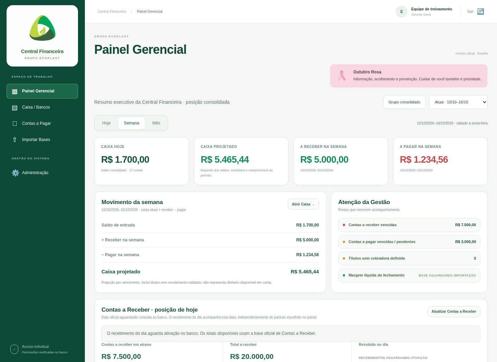
Menu lateral → Painel Gerencial → Resumo da Diretoria → Atualizar agora
Confira a data da posição, a data dos saldos e a referência do estoque. Use Atualizar agora depois que as bases forem atualizadas. Se um valor estiver aguardando informação, procure a área responsável pela base; não trate a pendência como zero. O ativo circulante é mostrado em milhões de reais com duas casas decimais.
Veja a figura 03 e a figura 04 e a figura 05.
Menu lateral → Painel Gerencial → Resumo da Diretoria → Baixar Excel / Imprimir / PDF / Histórico das posições
Use Abrir Caixa →, Consultar Contas a Pagar → ou Consultar Contas a Receber → quando o atalho estiver disponível para seu perfil. Baixar Excel gera o relatório com detalhamento e memória do cálculo; Imprimir / PDF abre a impressão do navegador. Histórico das posições consulta as cópias já salvas. A Gerência autorizada também pode usar Salvar posição; a Diretoria permanece em consulta.
Veja a figura 03.
Painel Gerencial → Resumo da Diretoria
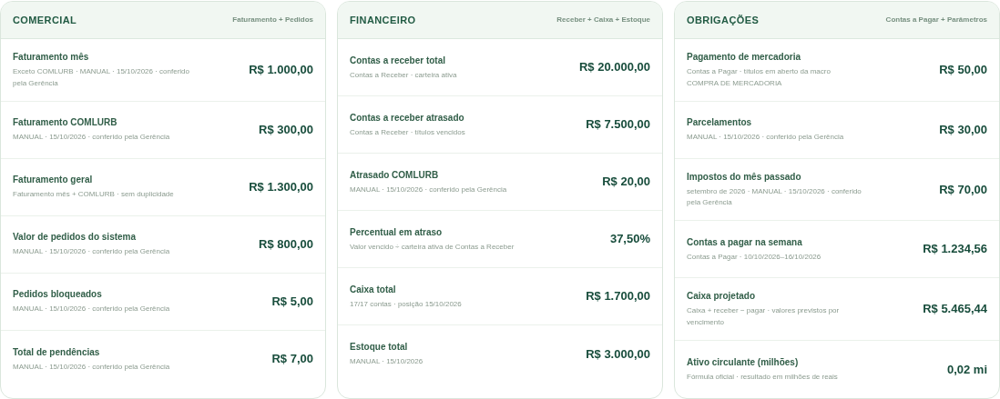
Painel Gerencial → Resumo da Diretoria → Memória do cálculo
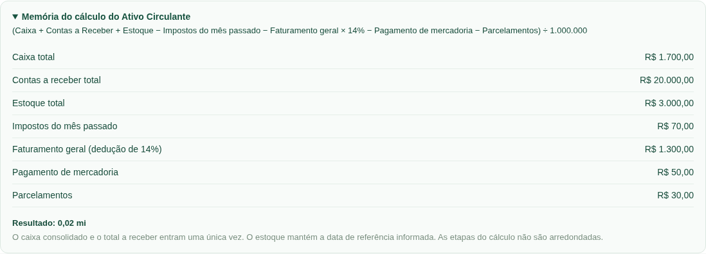
ÁREA 04 · 10 MIN
Menu lateral → Caixa / Bancos; para preencher o lote: Menu lateral → Importar Bases → Caixa / Bancos
Informar uma posição completa e correta, identificar contas negativas e preservar os arquivos de apoio sem confundi-los com atualização automática.
Quem utiliza: Responsável pelos saldos, Gerência e usuários autorizados a importar; Diretoria consulta
Menu lateral → Caixa / Bancos → Data da posição → Atualizar posição
Escolha a data e clique em Atualizar posição. A consulta considera o último saldo informado de cada conta até essa data. Confira Data do saldo em cada linha: selecionar hoje não significa que todas as contas tenham sido atualizadas hoje.
Veja a figura 06.
Menu lateral → Caixa / Bancos → Contas negativas — cobrir hoje
Confira a relação de contas negativas e a data de cada saldo. O alerta apresenta a necessidade de cobertura das contas negativas; os valores positivos de outras contas não são usados para ocultar essas necessidades. A decisão financeira e a transferência são feitas na operação bancária, fora dessa tela.
Veja a figura 06.
Menu lateral → Caixa / Bancos
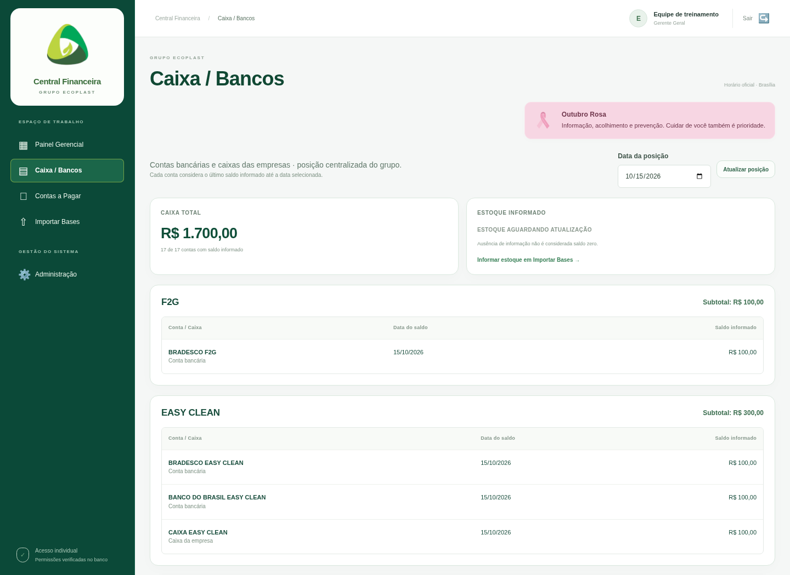
Menu lateral → Importar Bases → Caixa / Bancos
Selecione Data da posição e preencha Saldo no dia (R$) para todas as contas e caixas ativas. Use saldo positivo, negativo ou 0,00 quando o saldo real for zero. A lista segue o cadastro oficial apresentado na tela; não crie outra posição para repetir a mesma conta.
Veja a figura 08.
Menu lateral → Importar Bases → Caixa / Bancos → SALDO ACUMULADO INFORMADO
Confira a quantidade de contas preenchidas e o saldo acumulado com a sua conferência. Campos vazios deixam a posição incompleta. Saldos de outro dia não são copiados automaticamente; valores antigos exibidos ao lado servem apenas de referência.
Veja a figura 08.
Menu lateral → Importar Bases → Caixa / Bancos → Observação da posição → Salvar posição de caixa
Descreva a fonte da conferência em Observação da posição, clique em Salvar posição de caixa e revise a confirmação. Aguarde a mensagem de sucesso. Depois consulte Caixa / Bancos e o Painel Gerencial para conferir os reflexos da posição central.
Veja a figura 08 e a figura 06.
Importar Bases → Caixa / Bancos
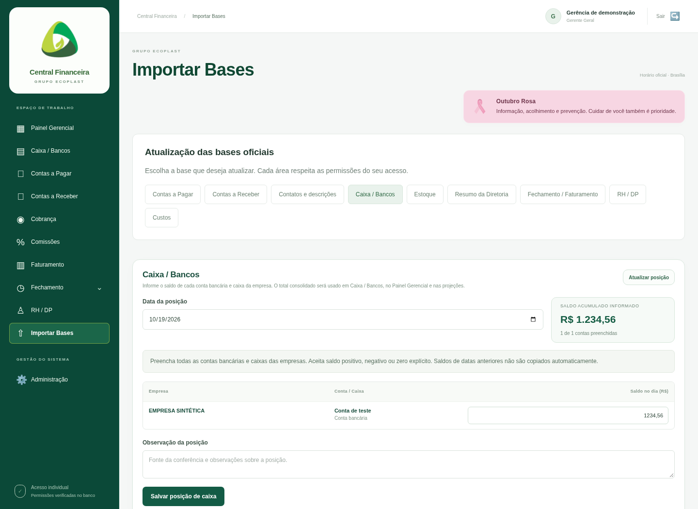
Menu lateral → Caixa / Bancos → Registrar saldo de conta
Se esse formulário aparecer para seu perfil, escolha Conta / Caixa, Data do saldo, Saldo (R$) e Observação do saldo. Clique em Registrar saldo e confirme conta, data e novo saldo. O registro mantém histórico. Ter acesso ao lote em Importar Bases não concede, por si só, acesso a esse ajuste avulso.
Veja a figura 06 e a figura 07.
Menu lateral → Importar Bases → Caixa / Bancos → Extrato bancário / apoio de conciliação
Em Arquivo de apoio, selecione uma cópia de até 2 MiB nos formatos aceitos pela tela. Informe Data de referência do arquivo, opcionalmente Conta do arquivo e a Descrição do arquivo. Clique em Registrar arquivo de apoio. Este registro guarda a cópia: não lê movimentações para alterar saldos ou dar baixa em títulos.
Veja a figura 08.
Menu lateral → Importar Bases → Caixa / Bancos → Histórico dos arquivos de apoio → Baixar original
Localize o arquivo pela data e descrição. Use Atualizar arquivos e Anterior / Próxima, se necessário. Clique em Baixar original para recuperar a cópia preservada. Se não houver certeza de que um envio foi concluído, confira o histórico antes de repetir.
Veja a figura 08.
Caixa / Bancos → Registrar saldo
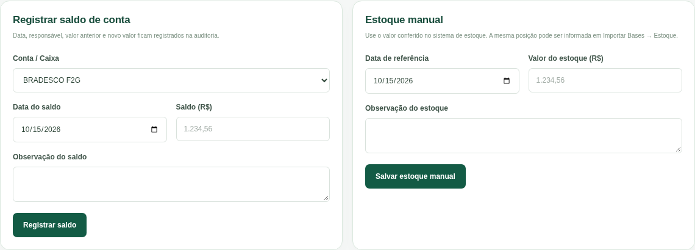
ÁREA 05 · 25 MIN
Menu lateral → Contas a Pagar; para importar: Menu lateral → Importar Bases → Contas a Pagar
Importar previsões e pagamentos, conferir os ausentes, comparar previsto e realizado por Macro, corrigir exceções e fechar o mês com histórico.
Quem utiliza: Responsável por Contas a Pagar e Gerência; Diretoria consulta resumos e detalhes
Menu lateral → Contas a Pagar → Resumo de Contas a Pagar
Informe Semana financeira e clique em Consultar semana, ou use Semana atual. A semana é de sábado a sexta-feira. Em Mês dos pagamentos, selecione o mês e clique em Consultar mês. O total Realizado no mês é independente da semana escolhida.
Veja a figura 09.
Menu lateral → Contas a Pagar → Previsto na semana / Realizado na semana / Saldo a pagar na semana / Total a vencer
Previsto na semana considera os títulos pelo vencimento, inclusive os já pagos. Realizado na semana usa a data efetiva do pagamento, mesmo que o título tenha vencido em outra semana. Saldo a pagar na semana é a pendência restante dos vencimentos da semana. Total a vencer considera todo o saldo restante desde hoje, sem limite de semanas. Vencidos a pagar fica separado.
Veja a figura 09.
Menu lateral → Contas a Pagar
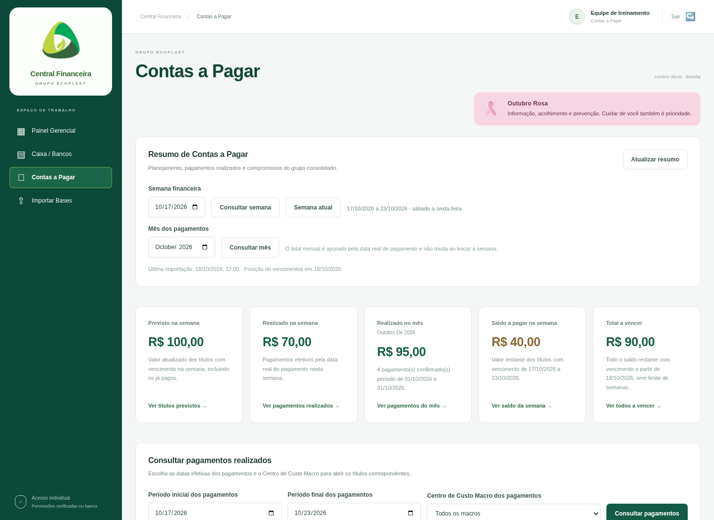
Menu lateral → Contas a Pagar → Resumo por Centro de Custo Macro → Semana / A vencer
Encontre a linha do Macro desejado e clique em Semana para abrir os títulos daquele Macro no intervalo. A vencer abre as pendências a partir de hoje. Cheques da semana já fazem parte das obrigações; não some o subtotal de cheques novamente.
Veja a figura 09 e a figura 10.
Contas a Pagar → Consultar títulos
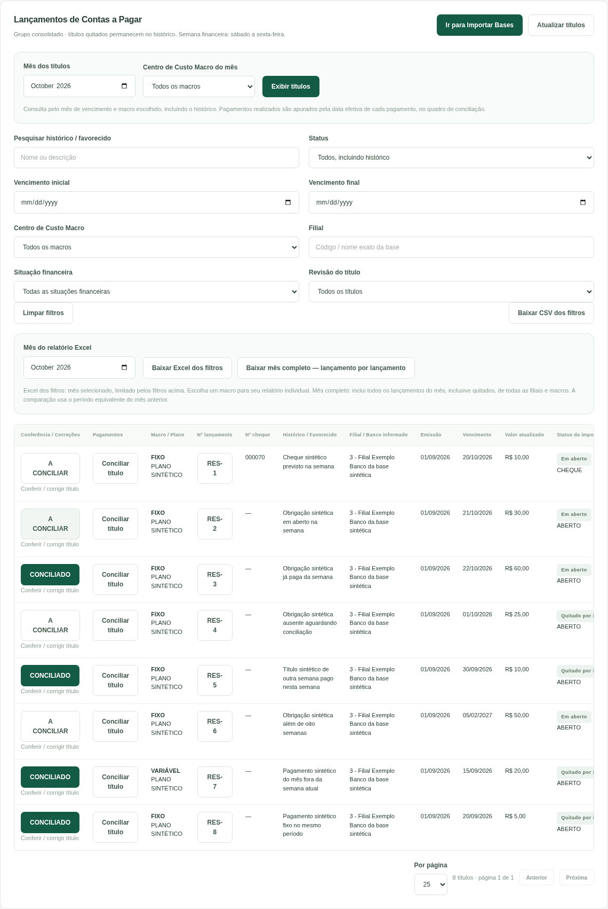
Menu lateral → Importar Bases → Contas a Pagar → Previsões / novos títulos
Escolha Relatório completo de títulos em aberto somente para uma exportação que cubra todos os abertos da mesma origem. Se o arquivo contiver apenas novos títulos, alterações ou um recorte de período/fornecedor/filiais, use Somente novos títulos e atualizações. O conteúdo determina a opção; o dia da semana não determina.
Veja a figura 12.
Sistema de origem → exportação oficial; depois Menu lateral → Importar Bases → Contas a Pagar → Colunas do relatório de Contas a Pagar
O modelo utilizado contém Lançamento, Histórico, Plano cp - Conta: nome, Plano cc - Conta: nome, Emissão: valor do lançamento, Emissão: data, Vencimento: data, Filial, Situação e Cheque: número. Filial e número do lançamento identificam o título; o cheque é outro campo, com zeros iniciais preservados. Não troque o número do lançamento pelo número do cheque. Use a cópia oficial nos formatos aceitos; para um .xls antigo, salve uma cópia .xlsx.
Veja a figura 12.
Importar Bases → Contas a Pagar
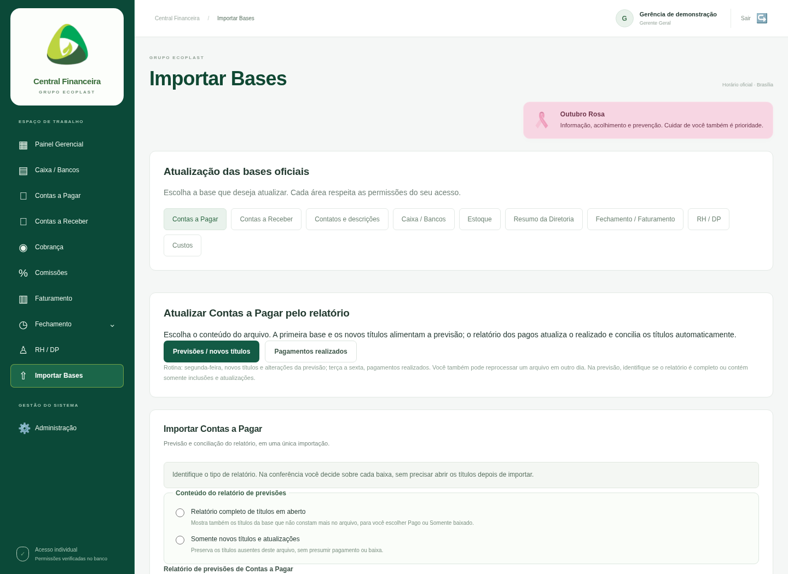
Menu lateral → Importar Bases → Contas a Pagar → Previsões / novos títulos → Analisar arquivo
Selecione Relatório de previsões de Contas a Pagar e marque Confirmo o conteúdo do relatório e o tipo de importação selecionado. Clique em Analisar arquivo. A tela aceita os formatos informados, até 2 MiB e 5.000 títulos. Confira números de lançamento, filiais, valores, vencimentos e cheque na prévia.
Veja a figura 12 e a figura 13.
Menu lateral → Importar Bases → Contas a Pagar → Conferência antes da importação → Classificação dos Planos de Contas
Escolha o Centro de Custo Macro correto para cada Plano de Contas sem classificação. Essa relação permite comparar previsto e realizado por Macro nas próximas importações. Se não souber a classificação, confirme com a responsável; não escolha apenas para liberar o botão.
Veja a figura 12.
Menu lateral → Importar Bases → Contas a Pagar → Conciliação antes de importar
Para cada ausente, confirme a situação real. Em Pago — informar pagamento efetivo, preencha Data efetiva do pagamento, Valor efetivamente pago (R$) e Conta que realizou o pagamento. Use o valor integral que quita a pendência permitida. Em Somente baixado — sem pagamento, o título sai dos valores financeiros, preserva o histórico e não gera realizado. Ausência, por si só, não comprova pagamento.
Veja a figura 12.
Menu lateral → Importar Bases → Contas a Pagar → Conciliação antes de importar → confirmação individual de R$ 0,01
Leia lançamento e filial e confirme a baixa de cada título identificado por R$ 0,01. A baixa retira esse título dos valores financeiros sem criar pagamento. Não existe confirmação geral para todos os centavos. Um pagamento real que já esteja registrado não é apagado por uma nova baixa.
Veja a figura 12.
Menu lateral → Importar Bases → Contas a Pagar → Validar escolhas da importação → Importar e conciliar títulos
Após qualquer escolha ou alteração, clique em Validar escolhas da importação. Resolva os problemas indicados em Linha, Coluna, Problema e Como corrigir. Quando a prévia estiver liberada, clique em Importar e conciliar títulos, revise o resumo e confirme. Aguarde o sucesso e confira o Histórico de importações de Contas a Pagar. Não há importação parcial das linhas válidas se houver bloqueio.
Veja a figura 12.
Importar Bases → Contas a Pagar → Analisar arquivo
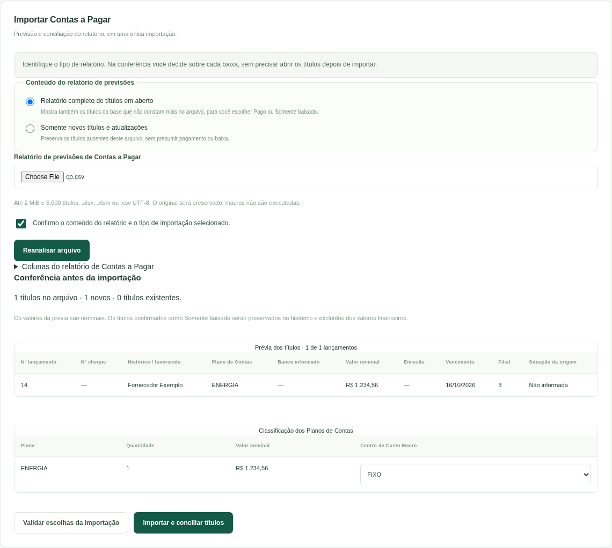
Menu lateral → Importar Bases → Contas a Pagar → Pagamentos realizados
Selecione Relatório de títulos pagos. Confirme que o arquivo traz pagamentos reais e marque a declaração da tela. Nesse modelo específico de CP, Vencimento: data é a data real do pagamento, Emissão: valor do lançamento é o valor integral pago e a conta informada representa a conta utilizada. Essa interpretação vale para esse modo; não a aplique ao relatório de previsões. Confira também Situação: PAGO no arquivo. Clique em Analisar pagamentos.
Veja a figura 14.
Importar Bases → Contas a Pagar → Títulos pagos
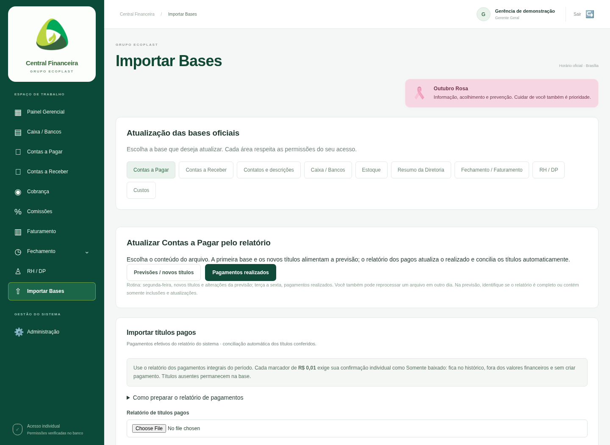
Menu lateral → Importar Bases → Contas a Pagar → Pagamentos realizados → Conferência dos pagamentos
Classifique planos novos e vincule bancos do relatório às contas oficiais, quando solicitado. Confira novos pagamentos, já registrados, correções e baixas sem pagamento; confirme cada caso de R$ 0,01 indicado. Após alterações, use Reanalisar mesmo arquivo. Clique em Concluir importação dos pagamentos e confirme a revisão do arquivo. Os pagamentos válidos ficam conciliados automaticamente. Título desconhecido exige importar a previsão primeiro.
Veja a figura 14 e a figura 15.
Menu lateral → Importar Bases → Contas a Pagar → Repetir confirmação pendente
Se aparecer A confirmação está pendente, mantenha a tela aberta e use Repetir confirmação pendente. O mesmo arquivo e as escolhas ficam congelados; esse botão consulta o mesmo envio sem duplicá-lo. Não tente mudar o arquivo ou criar outro envio para contornar a incerteza. Se a tela foi fechada, confira o histórico antes de importar novamente.
Veja a figura 12 e a figura 14.
Importar Bases → Contas a Pagar → Pagamentos realizados → Analisar pagamentos
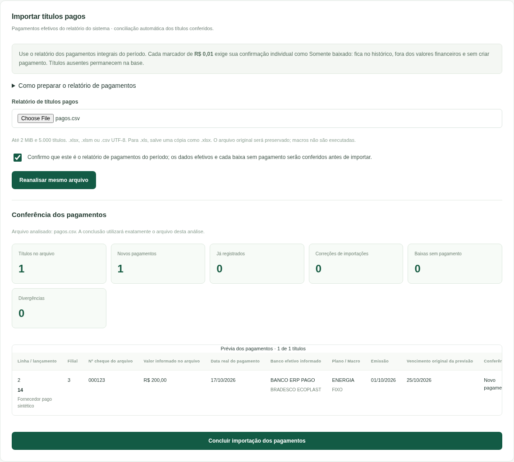
Menu lateral → Contas a Pagar → Consultar pagamentos realizados → Consultar pagamentos
Preencha Período inicial dos pagamentos e Período final dos pagamentos, selecione Centro de Custo Macro dos pagamentos e clique em Consultar pagamentos. O quadro Pagamentos realizados abre com esses filtros. Também há os atalhos Ver pagamentos realizados → e Ver pagamentos do mês → nos cards.
Veja a figura 09 e a figura 16 e a figura 11.
Menu lateral → Contas a Pagar → Abrir todos os lançamentos → Mês dos títulos / Centro de Custo Macro do mês → Exibir títulos
Escolha o mês de vencimento e o Macro e clique em Exibir títulos. Refine com Pesquisar histórico / favorecido, Status, Vencimento inicial/final, Centro de Custo Macro, Filial, Situação financeira e Revisão do título. Essa consulta é de vencimentos; os pagamentos são consultados pelas datas efetivas no quadro de realizados.
Veja a figura 10.
Menu lateral → Contas a Pagar → Abrir todos os lançamentos → Conciliar título
Clique em Conciliar título na linha desejada; em perfis de consulta o botão aparece como Consultar pagamentos. Confira o valor pago, a pendência, o banco, a data real, o número do cheque e o Histórico financeiro deste título. Feche o detalhe atual antes de abrir outro. Use esse fluxo para exceções: os pagamentos corretos importados não precisam ser lançados outra vez.
Veja a figura 10 e a figura 16.
Menu lateral → Contas a Pagar → Abrir todos os lançamentos → Conciliar título → Registrar pagamento integral
Somente com autorização e comprovante real: confira o Valor integral a pagar, preencha Data real do pagamento, Banco / conta do pagamento e Observação do pagamento. Clique em Confirmar pagamento e revise a confirmação. O sistema exige quitação integral; não há pagamento parcial novo. O registro não altera os saldos de Caixa / Bancos.
Veja a figura 16.
Menu lateral → Contas a Pagar → Conciliar título → Histórico financeiro deste título → Estornar pagamento
Localize o pagamento correto, clique em Estornar pagamento, informe Motivo do estorno e use Confirmar estorno. Depois registre os dados efetivos corretos, conforme a operação real e a autorização. O estorno e o pagamento anterior permanecem no histórico. Mudar o banco previsto do título não corrige o banco do pagamento já registrado.
Veja a figura 16.
Menu lateral → Contas a Pagar → Abrir todos os lançamentos → A CONCILIAR ou CONCILIADO → Corrigir título
No detalhe de conferência, abra Corrigir título. Ajuste os campos necessários e preencha Motivo da correção. Para corrigir o Macro de pagamentos existentes, confira e marque Atualizar macro dos pagamentos já registrados quando solicitado. Clique em Salvar correção do título. A mudança preserva histórico, invalida a conferência e pode reabrir fechamentos afetados. A próxima importação volta a atualizar os dados da fonte; o Macro individual fica preservado enquanto o Plano de Contas não mudar.
Veja a figura 10.
Menu lateral → Contas a Pagar → Abrir todos os lançamentos → A CONCILIAR → Confirmar conciliação do título
Confira o título e os pagamentos. Se o valor estiver integral e exatamente quitado, preencha Observação da conferência e clique em Confirmar conciliação do título. Sem quitação integral o botão continua indisponível. Título baixado sem pagamento não deve ser marcado como pago ou conciliado para liberar o mês.
Veja a figura 10.
Contas a Pagar → Títulos → Revisar
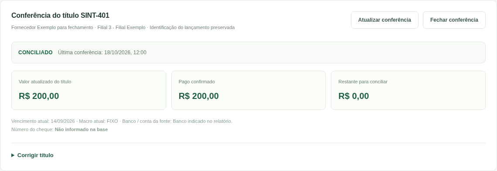
Contas a Pagar → Valores realizados
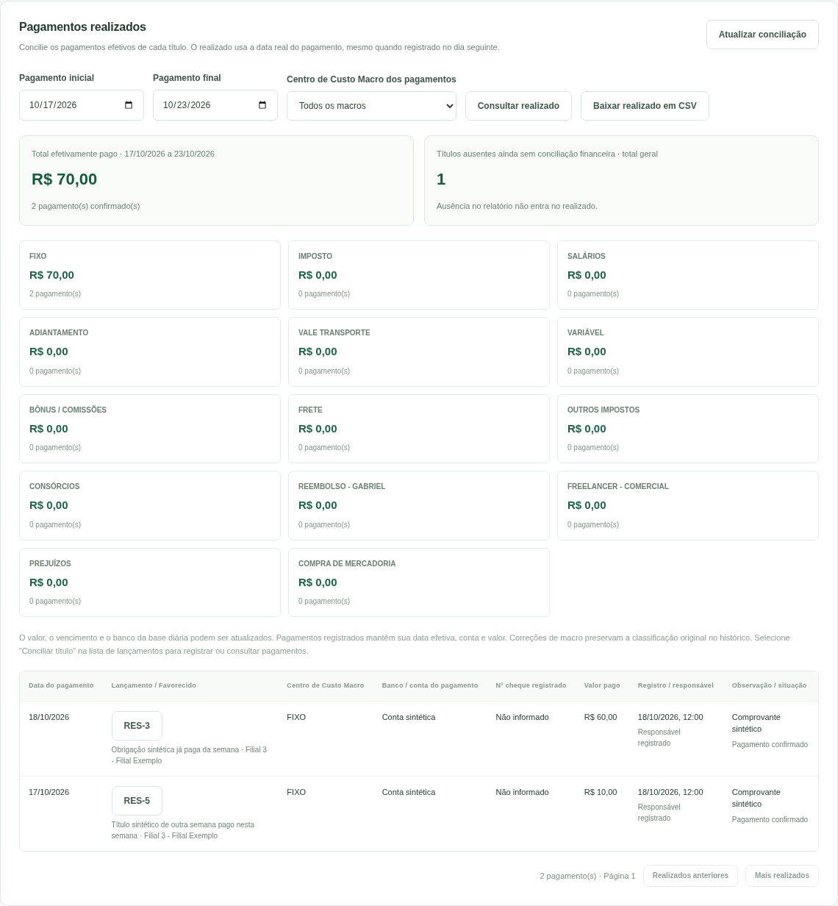
Menu lateral → Contas a Pagar → Fechamento e parâmetros → Fechamento mensal de Contas a Pagar
Selecione Mês do fechamento e clique em Consultar fechamento. Confira CONCILIADOS, A CONCILIAR, elegíveis e saldo. Resolva os impedimentos; somente quando o mês estiver liberado, preencha Observação do fechamento e clique em Fechar mês. A confirmação salva uma posição histórica. O mês é de vencimento dos títulos; o realizado mensal continua pela data real dos pagamentos.
Veja a figura 17.
Menu lateral → Contas a Pagar → Fechamento e parâmetros → Fechamento mensal de Contas a Pagar
Para corrigir um mês fechado, informe o motivo em Observação do fechamento e use Reabrir mês. Faça os ajustes, confira novamente e feche de novo. As versões anteriores ficam preservadas. Em Histórico dos fechamentos, use Baixar fechamento em Excel na versão desejada; não confunda a posição salva com o relatório atual que pode ter mudado.
Veja a figura 17.
Menu lateral → Contas a Pagar → Abrir todos os lançamentos → Baixar CSV dos filtros / Baixar Excel dos filtros
Com os filtros conferidos, use Baixar CSV dos filtros. Para Excel, selecione Mês do relatório Excel e use Baixar Excel dos filtros; Baixar mês completo — lançamento por lançamento inclui todos os títulos do mês. No quadro Pagamentos realizados, use Baixar realizado em CSV para as datas efetivas. A exportação depende da permissão de consulta/exportação aplicável e pode ser interrompida se a base mudar durante a geração.
Veja a figura 10 e a figura 16.
Menu lateral → Contas a Pagar → Fechamento e parâmetros → Regras e vínculos das previsões fixas
A previsão auxiliar acompanha compromissos estimados e seus vínculos com planos. Marcar como atendida ou editar uma regra não registra pagamento. Quando autorizado, use Vincular para escolher a previsão ou Nenhuma previsão fixa e preencha vigência e observação; alterações de regra são restritas aos perfis habilitados. Não use esse quadro para substituir os relatórios reais de títulos e pagamentos.
Veja a figura 17.
Menu lateral → Contas a Pagar → Mensagens da Diretoria e Gerência
Quando esse quadro estiver liberado para seu perfil, use Atualizar mensagens e o filtro Status para Pendentes, Concluídas ou Todos — pendentes primeiro. Leia prioridade, referência, autor e histórico. Com autorização de escrita, Nova mensagem permite preencher Prioridade, Lançamento / referência (opcional) e Mensagem e usar Enviar mensagem. Concluir e Reabrir alteram apenas a pendência da mensagem: não pagam nem conciliam títulos. O perfil atual da Diretoria permanece em consulta.
Veja a figura 09.
Contas a Pagar → Ferramentas → Fechamento mensal
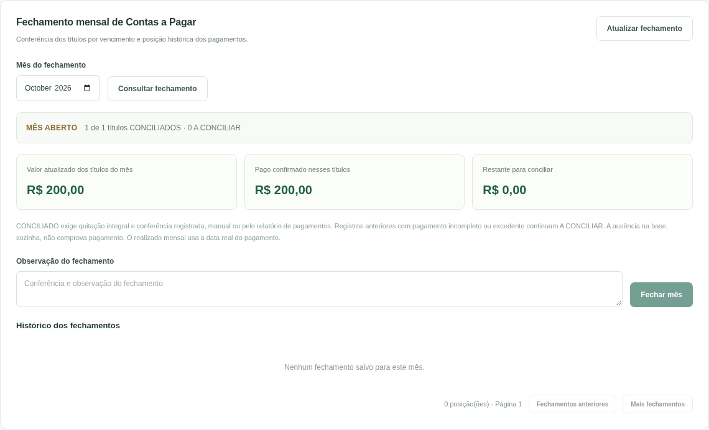
ÁREA 06 · 12 MIN
Menu lateral → Contas a Receber → Títulos
Encontrar um título, conferir sua situação financeira e consultar ou exportar a carteira correta.
Quem utiliza: Contas a Receber, Gerência e Diretoria conforme permissão
Menu lateral → Contas a Receber → Títulos
A aba Títulos apresenta os títulos importados. O filtro Situação do título começa em Carteira ativa. Clique em Atualizar títulos após uma nova importação ou quando outra pessoa concluir uma validação. A Diretoria consulta as informações e não altera registros.
Veja a figura 18.
Contas a Receber → Títulos → filtros
Use Pesquisar cliente / órgão, Situação do título, Vencimento inicial, Vencimento final e Filial. Quando disponível, use Cobradora para consultar uma carteira ou Sem cobradora definida. Os filtros de data desta lista são de vencimento, não de recebimento. Para remover os recortes, clique em Limpar filtros. Confira a quantidade e use Anterior, Próxima e Por página para navegar.
Veja a figura 18.
Contas a Receber → Títulos → coluna Situação / Última ação
Novo e Aberto representam dívida em aberto; Pago — aguardando validação registra uma informação que o financeiro ainda precisa confirmar; Pagamento não localizado — cobrar novamente indica devolução à mesma carteira; Quitado — validado registra recebimento confirmado. Retirado da carteira ativa indica ausência no relatório completo e exige Quitados para confirmar o recebimento, quando aplicável. Não trate status operacional da cobrança como confirmação financeira.
Contas a Receber → Títulos → Detalhar
Clique em Detalhar na linha desejada. Confira documento, cliente, filial, vencimento, valor original, origem e datas do pagamento. Leia Histórico do título e o recebimento validado, quando houver. O histórico mostra até as 50 ações mais recentes na tela; registros anteriores permanecem preservados. Fechar detalhes volta à lista sem modificar dados.
Veja a figura 18.
Contas a Receber → Títulos → Situação do título
Escolha Todos, incluindo histórico para visão ampliada; Ausentes do relatório — histórico para retirados pelo relatório completo; ou Quitado — validado para recebimentos confirmados. Um título retirado e depois quitado continua com o histórico anterior. Se reaparecer em abertos sem recebimento confirmado, retorna à carteira com o mesmo vínculo.
Contas a Receber → Títulos → Baixar CSV dos filtros
Aplique primeiro os filtros e clique em Baixar CSV dos filtros. A exportação utiliza toda a seleção autorizada, não somente a página visível. Confira o período e a situação antes de compartilhar. Se a base mudar durante a exportação, atualize a consulta e repita para obter um arquivo consistente.
Contas a Receber → Abrir fila de validação ou aba Validação financeira
Use a aba Validação financeira para analisar os pagamentos informados pela cobrança. A listagem da carteira mostra informação e validação separadamente; não substitua a conferência da entrada real por uma observação do cliente.
Veja a figura 23.
Menu lateral → Contas a Receber → Títulos
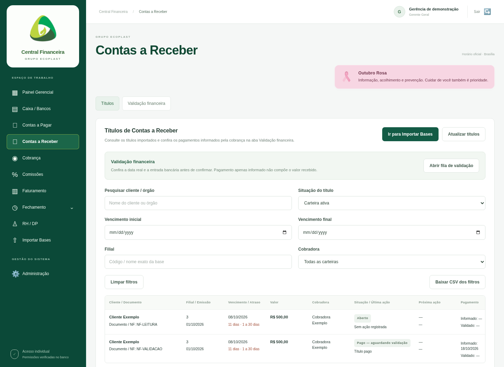
ÁREA 07 · 25 MIN
Menu lateral → Importar Bases → Contas a Receber
Atualizar a carteira, retirar ausentes de um relatório completo e confirmar recebimentos sem digitar novamente os títulos.
Quem utiliza: Financeiro de Contas a Receber e Gerência com permissão de importação
Sistema de origem → Exportar relatório → conferir o arquivo
Para os abertos, inclua os títulos vencidos e a vencer. Confira os campos Documento: número, Entidade 1 - Entidade: nome, Filial, Vencimento: data e Emissão: valor do lançamento; Emissão: data e CNPJ são opcionais. Use uma cópia .xlsx, .xlsm ou .csv UTF-8 com uma única aba preenchida, até 2 MiB e 5.000 títulos. O leitor não executa macros e recusa fórmulas. Documento/NF precisa ser texto ou inteiro não negativo; valores com centavos na coluna de documento indicam possível deslocamento de colunas.
Menu lateral → Importar Bases → Contas a Receber → Abertos e vencidos
Clique em Abertos e vencidos. Escolha o arquivo no campo Relatório de abertos e vencidos de Contas a Receber. Esse arquivo atualiza a previsão e os dados da carteira. Recebimentos reais devem entrar pela modalidade Títulos quitados.
Veja a figura 19.
Importar Bases → Contas a Receber → Abertos e vencidos → Abrangência do relatório
Use Relatório completo — conferir títulos ausentes somente quando o arquivo trouxer todos os títulos abertos da mesma origem e todas as filiais. Se o arquivo contiver apenas novos títulos, uma filial ou outro recorte, selecione Somente inclusão e atualização. Informe Data da posição do relatório e marque a declaração correspondente. A data da posição não é data de pagamento.
Veja a figura 19.
Importar Bases → Contas a Receber → Analisar arquivo
Clique em Analisar arquivo. Confira quantidade, valor nominal, títulos novos e alterações. A análise não grava os títulos. Se aparecer Problemas encontrados, leia Linha, Coluna, Problema e Como corrigir; corrija a origem e analise novamente. Não transforme um valor monetário deslocado em número de NF apenas para liberar a importação.
Importar Bases → Contas a Receber → Cobradoras responsáveis pela carteira
Nos clientes sem responsável, selecione a cobradora. Para preencher vários clientes, use Cobradora para clientes sem responsável → Aplicar às carteiras sem responsável e revise as escolhas individuais. As carteiras existentes permanecem preservadas. Após mudar responsáveis, clique novamente em Analisar arquivo. Essa atribuição é feita na importação, não dentro do atendimento.
Veja a figura 19.
Importar Bases → Contas a Receber → Conferir parcelas do mesmo documento
Quando a mesma NF tiver parcelas ou uma possível alteração de vencimento, leia cliente, filial, vencimento e valor. Em Vínculo confirmado, selecione a parcela existente somente se for uma atualização daquela mesma parcela; escolha Nova parcela se for uma dívida diferente. Use Validar escolhas de parcelas e aguarde a nova análise. O botão Marcar linhas como novas parcelas só deve ser usado depois da conferência de todas essas linhas.
Importar Bases → Contas a Receber
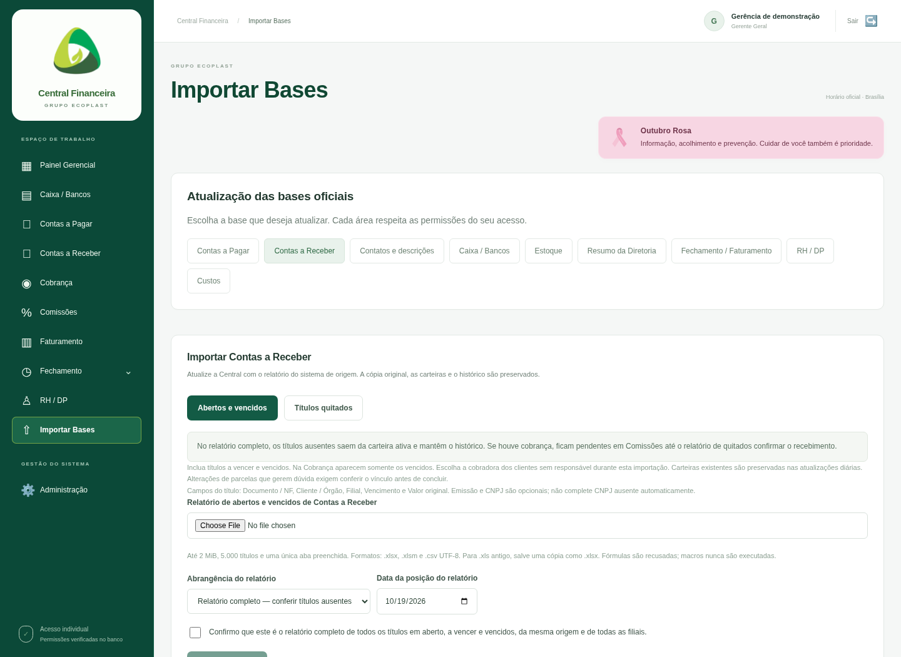
Importar Bases → Contas a Receber → Conferência de Contas a Receber → Conferir títulos ausentes do relatório completo
Abra a relação dos ausentes antes de concluir. Na importação completa, ausentes com cobrança saem da carteira ativa e ficam pendentes em Comissões, aguardando Quitados. Ausentes sem cobrança ficam somente no histórico. Nada disso confirma pagamento ou soma recebimento. No modo de inclusão e atualização, ausentes continuam como estão. Se o título reaparecer em abertos, a carteira e o histórico são recuperados; um título já validado não é reaberto.
Veja a figura 20.
Importar Bases → Contas a Receber → Concluir importação de abertos e vencidos
Depois que a conferência estiver liberada, clique em Concluir importação de abertos e vencidos. Leia a confirmação e aceite apenas se a abrangência e os ausentes estiverem corretos. Aguarde Importação concluída. Consulte o Histórico de importações de Contas a Receber para conferir o arquivo registrado. Volte a Contas a Receber → Títulos e clique em Atualizar títulos para revisar a carteira.
Veja a figura 18.
Importar Bases → Contas a Receber → Analisar arquivo → Conferir ausentes
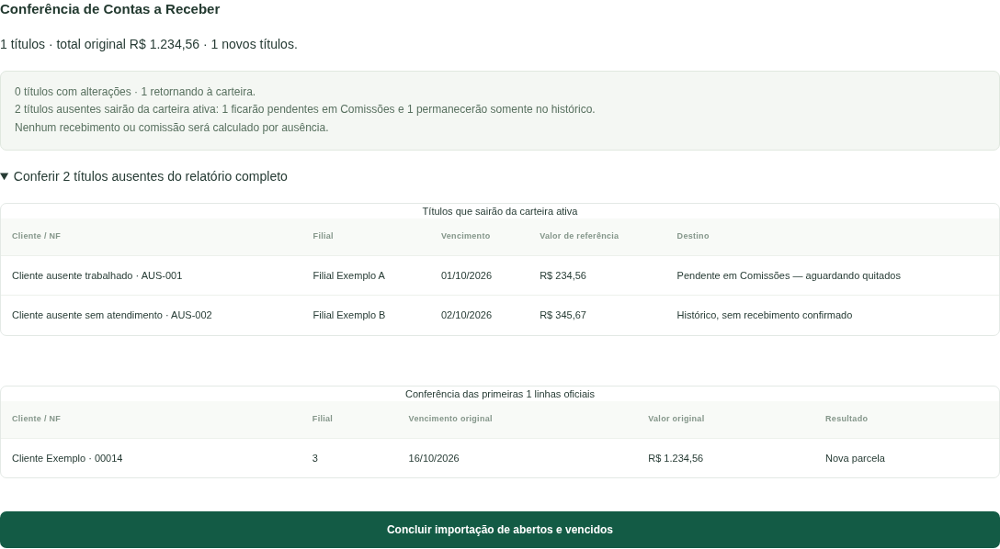
Menu lateral → Importar Bases → Contas a Receber → Títulos quitados
Selecione o relatório de títulos quitados. Além dos campos originais do título, ele deve trazer Quitação: data do recebimento e Quitação: valor recebido. Marque a declaração de que todas as linhas são quitadas e clique em Analisar arquivo. Confira o Total recebido efetivo separadamente do total original e resolva possíveis vínculos entre parcelas. O vencimento não substitui a data efetiva do recebimento.
Veja a figura 21.
Importar Bases → Contas a Receber → Títulos quitados
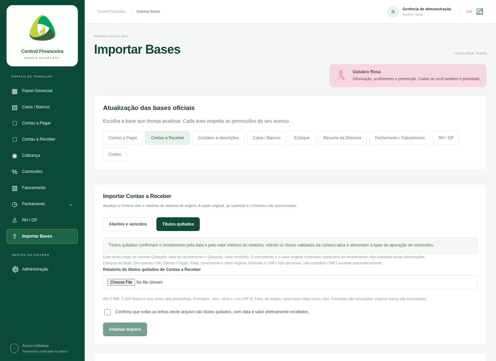
Importar Bases → Contas a Receber → Títulos quitados → Confirmar importação de títulos quitados
Clique em Confirmar importação de títulos quitados e leia o resumo de novos recebimentos, já registrados, correções e quitados do histórico. O relatório confirmado retira os títulos validados da carteira ativa, atualiza os valores recebidos pela data real e disponibiliza a base de comissão dos títulos trabalhados. Corrigir um recebimento importado preserva o histórico anterior. Divergências com recebimento manual exigem conferência; não devem ser substituídas sem revisão.
Veja a figura 22.
Importar Bases → Contas a Receber → aviso de confirmação pendente
Se a confirmação dos abertos perder a resposta, mantenha a tela aberta, o mesmo arquivo e as mesmas escolhas. Use Conferir confirmação pendente; esse botão verifica o mesmo envio. Em Quitados, siga o aviso e use Analisar arquivo para conferir o mesmo relatório antes de repetir a confirmação. Se o sistema avisar que a base mudou, analise novamente. Não troque o tipo de arquivo durante uma confirmação ainda incerta.
Importar Bases → Contas a Receber → Títulos quitados → Analisar arquivo
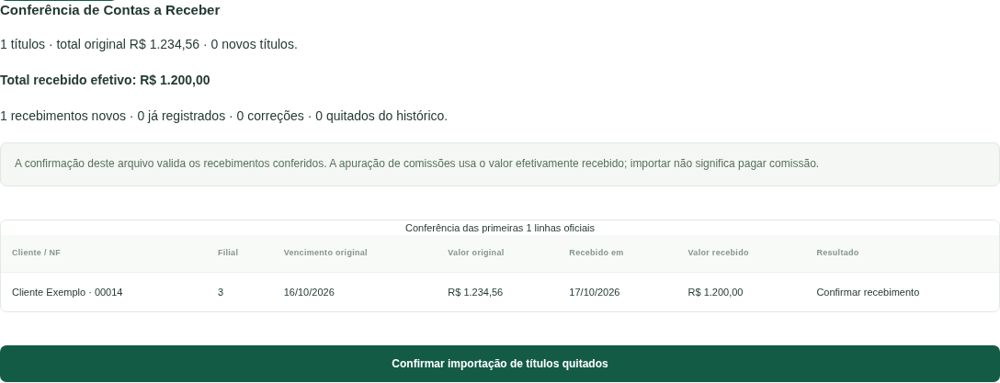
ÁREA 08 · 15 MIN
Menu lateral → Contas a Receber → Validação financeira
Confirmar uma entrada comprovada ou devolver um pagamento não localizado à mesma cobradora.
Quem utiliza: Responsável por Contas a Receber com permissão de validar; Gerência. Cobradoras e Diretoria consultam conforme seu acesso.
Menu lateral → Contas a Receber → Validação financeira → Atualizar fila
Clique em Validação financeira e Atualizar fila. Use Responsável pela carteira para localizar pagamentos de uma cobradora; a paginação fica em Página anterior da fila e Próxima página da fila. A mesma área também pode ser consultada em Cobrança → Validação financeira, conforme o perfil.
Veja a figura 23.
Contas a Receber → Validação financeira → Conferir [documento]
Clique em Conferir na linha do título. Leia Relato original da cobrança, data informada, responsável e observação. Confira o documento, a filial, o valor original e o vencimento. O relato é a informação da cobradora; a decisão financeira será registrada separadamente.
Veja a figura 23.
Contas a Receber → Validação financeira → Conferência → Decisão da validação
Selecione Confirmar recebimento, informe Data real do recebimento e registre Justificativa / observação da validação quando necessário. Compare a entrada real com o título antes de clicar em Confirmar recebimento financeiro. Leia a confirmação e aguarde a mensagem de sucesso. A confirmação manual considera o valor nominal do título; se a origem informa valor efetivamente recebido diferente, use o relatório de Títulos quitados para registrá-lo corretamente.
Contas a Receber → Validação financeira → Conferência → Não localizado — cobrar novamente
Selecione Não localizado — cobrar novamente e preencha a justificativa explicando a conferência realizada. Clique em Devolver à mesma responsável e confirme. O título retorna à mesma cobradora, com o histórico do relato preservado e retorno devido para hoje. Não é criado recebimento nem comissão.
Veja a figura 23.
Contas a Receber → Títulos e Cobrança → Títulos
Após confirmar, verifique o título no histórico de Quitado — validado e o recebimento na data correta. Após devolver, confira o título na carteira da responsável e na agenda de retornos. Se já existir recebimento validado, a tela pede atualização; confira o registro em vez de validar novamente.
Importar Bases → Contas a Receber → Títulos quitados
Quando um título tiver sido retirado pelo relatório completo de abertos, a confirmação do recebimento deve vir de Títulos quitados. Não use a ausência ou uma tentativa de validação manual como prova de recebimento. A eventual pendência de Comissões será resolvida pela confirmação real.
Veja a figura 21.
Contas a Receber → Validação financeira → Conferir
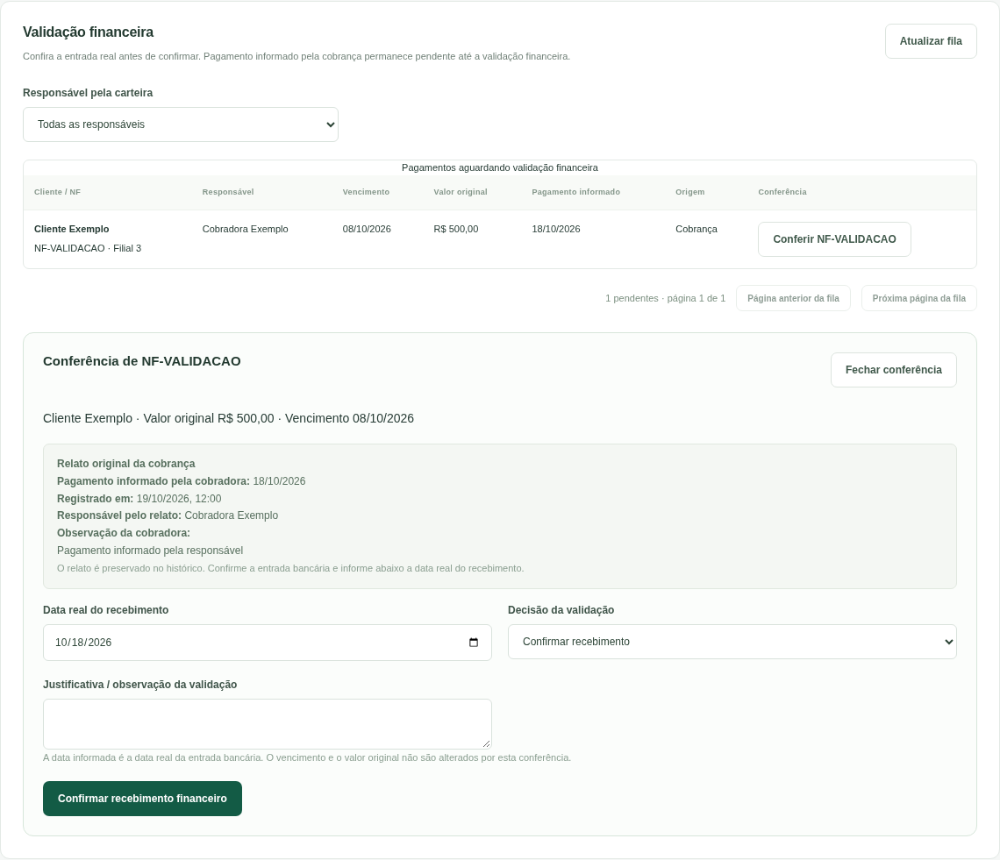
ÁREA 09 · 30 MIN
Menu lateral → Cobrança → Visão geral e Títulos
Organizar os retornos, registrar o contato, contabilizar o tempo e encaminhar pagamentos para validação.
Quem utiliza: Cobradoras, supervisão e Gerência. Diretoria em consulta.
Menu lateral → Cobrança → Visão geral
Leia Agenda de retornos e Gestão da cobrança. Os cards mostram carteira vencida, quantidade de títulos, pagamentos informados e retornos para hoje. Consulte Faixas de atraso e a distribuição por cobradora. Clique em uma faixa, carteira ou próximo encaminhamento para abrir seus títulos. Os números refletem somente a carteira autorizada para o perfil.
Veja a figura 24.
Cobrança → Visão geral → Agenda de retornos → Atender retornos ou Abrir retorno
Comece pelos contatos com próxima ação para hoje ou atrasada. Use Atender retornos para abrir a fila ou Abrir retorno para escolher um título. Em Títulos, também existe Abrir retornos devidos. Retornos futuros não impedem novos contatos; os devidos precisam ser concluídos antes de iniciar outros atendimentos da carteira. Salvar somente um rascunho não resolve o retorno.
Veja a figura 24.
Menu lateral → Cobrança → Visão geral
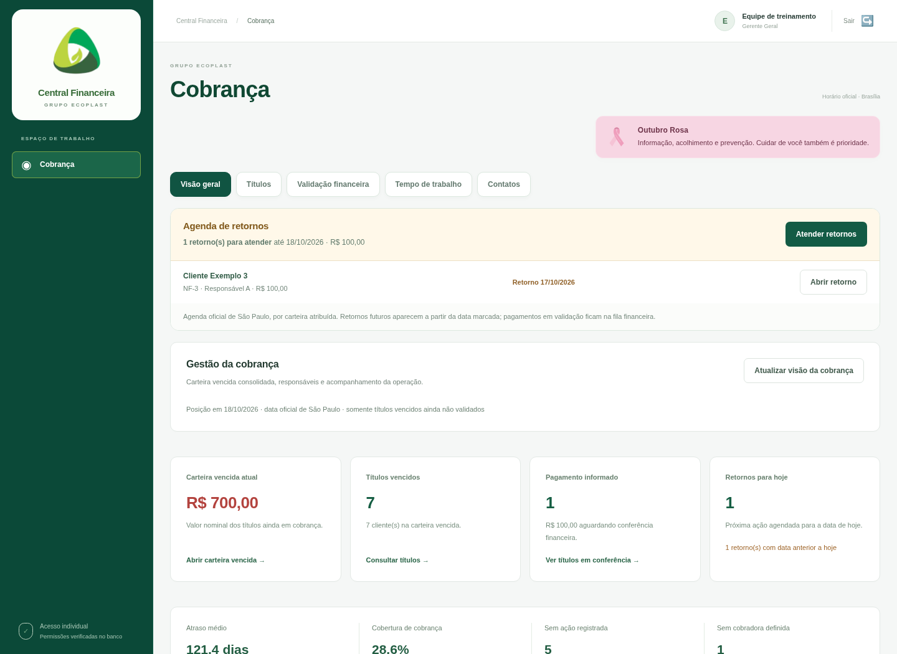
Cobrança → Títulos → Central operacional da cobrança
Use Buscar na carteira para cliente, documento, status ou observação e clique em Aplicar busca. Escolha Faixa de atraso, Ordenar carteira e Status da cobrança; a supervisão pode filtrar Cobradora. Abra Vencimentos e situação financeira para datas de vencimento, Situação financeira e Próxima ação da carteira. Use Limpar filtros para voltar ao padrão. O total mostrado acima da lista corresponde a toda a seleção, não apenas à página atual.
Veja a figura 25.
Cobrança → Títulos → Abrir → Atendimento do título
Na linha desejada, clique em Abrir. Confira cliente, documento, filial, vencimento, dias de atraso e valor. A Cobradora responsável aparece preenchida; a responsável é definida na importação. Expanda Contatos e descrição do órgão para consultar os e-mails, telefones e a descrição do título antes do contato.
Veja a figura 25 e a figura 29.
Cobrança → Títulos → Abrir
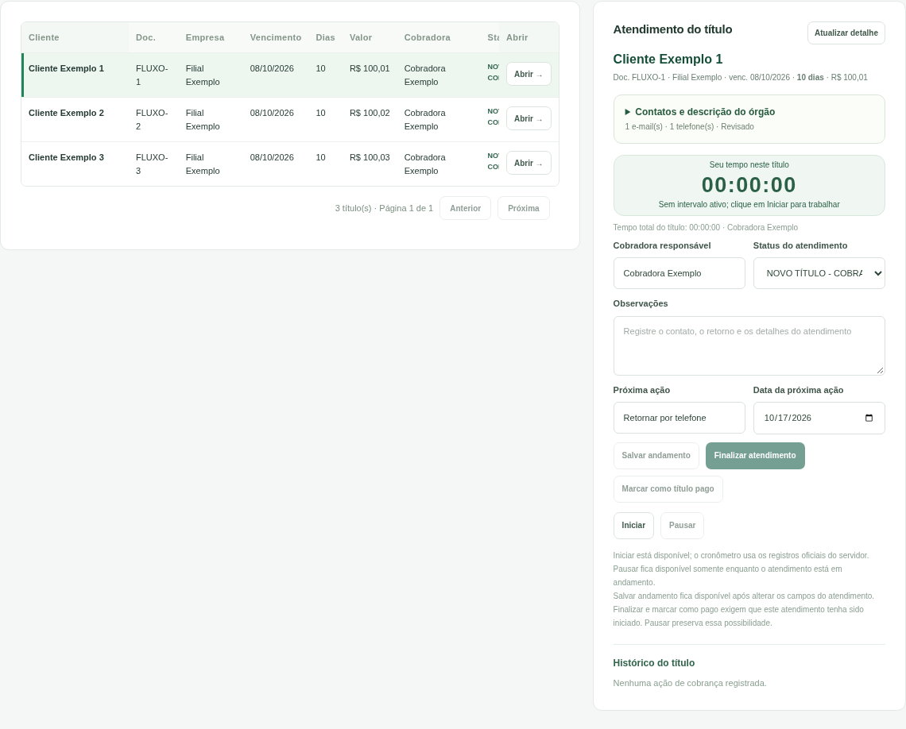
Cobrança → Títulos → Atendimento do título → Iniciar
Clique em Iniciar antes de trabalhar no contato. O cronômetro usa o registro oficial do servidor e compõe Tempo de trabalho da operadora. Só mantenha um atendimento em andamento por acesso. Se houver outro intervalo aberto, use Abrir atendimento em andamento para pausar ou finalizar o anterior.
Veja a figura 26.
Cobrança → Títulos → Atendimento do título → Status do atendimento e Observações
Selecione o Status do atendimento compatível com o contato, como SEM SUCESSO, AGUARDANDO RETORNO ou COBRANCA VIA EMAIL. Em Observações, registre objetivamente a pessoa contatada, o canal utilizado, a informação recebida e o encaminhamento. O andamento de um título fica nesse campo; dados permanentes de telefone/e-mail ficam nos contatos do órgão.
Veja a figura 25.
Cobrança → Títulos → Atendimento do título → Pausar ou Salvar andamento
Use Pausar para interromper o tempo durante uma interrupção. Iniciar retoma um novo intervalo e preserva os anteriores. Use Salvar andamento para guardar alterações ainda não finalizadas; o botão só fica disponível após mudanças válidas. Um rascunho pode ser salvo antes do início ou durante uma pausa, mas não encerra o atendimento, não conclui um retorno e não confirma pagamento.
Cobrança → Títulos → Abrir → Iniciar
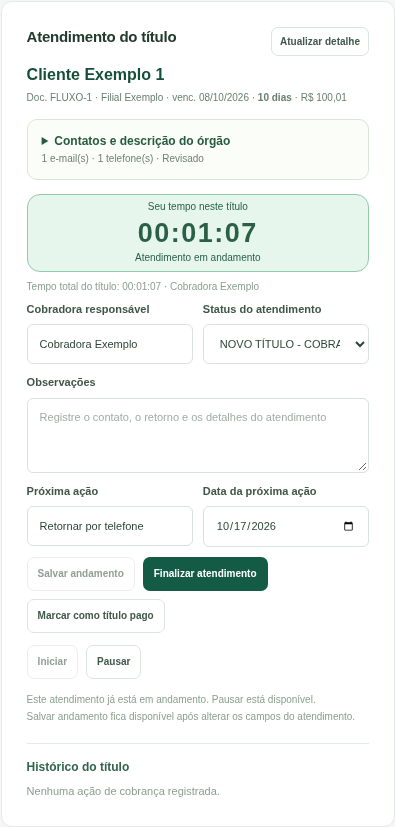
Cobrança → Títulos → Atendimento do título → Próxima ação → Data da próxima ação → Finalizar atendimento
Depois de iniciar o atendimento, preencha Observações, Próxima ação em texto claro e Data da próxima ação de hoje em diante. Exemplo fictício: Solicitar comprovante ao setor financeiro, com retorno no próximo dia útil. Clique em Finalizar atendimento e aguarde a confirmação. A finalização registra o encaminhamento e encerra o intervalo de tempo em conjunto.
Veja a figura 27.
Cobrança → Títulos → Atendimento do título → Marcar como título pago
Se o cliente informar pagamento, registre a informação e a data em Observações. Em Status do atendimento, selecione TÍTULO PAGO para exibir Data do pagamento informado. Preencha uma data real até hoje e clique em Marcar como título pago. O atendimento precisa ter sido iniciado. Esse fluxo encerra o intervalo e encaminha o título para Validação financeira; não confirma sozinho o recebimento. O campo de próxima ação passa a Aguardar validação financeira. Salvar um rascunho com status pago não faz o encaminhamento.
Cobrança → Títulos → Vencimentos e situação financeira → Situação financeira
Use Todos, incluindo histórico, Quitados — histórico ou Ausentes do relatório — histórico quando precisar consultar registros anteriores. No Atendimento do título, leia Histórico do título, Andamentos salvos e Movimentações por relatório completo, quando disponíveis. Títulos retirados por ausência e títulos validados permanecem em consulta; não devem receber novos atendimentos ativos.
Cobrança → Títulos → Baixar CSV dos filtros
Depois de conferir a busca e os filtros, clique em Baixar CSV dos filtros. O arquivo reúne toda a seleção autorizada, com paginação consultada no servidor. O histórico exportado identifica os títulos retirados da carteira ativa. Se a base mudar durante a geração, atualize e exporte novamente.
Cobrança → Títulos → Atendimento do título → Pausar ou Finalizar atendimento; depois Sair
Antes de sair, confira se ainda existe um cronômetro em andamento. Fechar o navegador não encerra o intervalo do servidor. Pause ou finalize normalmente. Se o título ficou indisponível enquanto havia intervalo aberto, siga a opção Finalizar intervalo indisponível quando a Central apresentar a recuperação autorizada; esse encerramento preserva o tempo e não confirma pagamento.
Cobrança → Atendimento → Observações e próxima ação
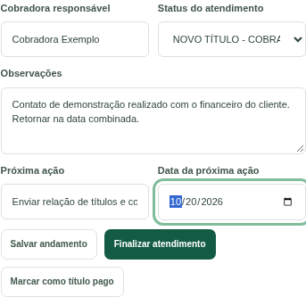
ÁREA 10 · 12 MIN
Menu lateral → Cobrança → Títulos → Finalizar atendimento → E-mail após o atendimento
Preparar um rascunho completo com vencidos e a vencer e enviá-lo pela caixa postal utilizada pela equipe.
Quem utiliza: Cobradoras com permissão de atendimento
Cobrança → Títulos → Finalizar atendimento → E-mail após o atendimento
Depois da confirmação da finalização, localize E-mail após o atendimento. Clique em Preparar e-mail de cobrança. Pausar e Salvar andamento não abrem essa opção. O quadro corresponde a uma finalização feita por seu acesso.
Veja a figura 28.
Cobrança → E-mail após o atendimento → Preparar e-mail de cobrança
Selecione os destinatários entre os e-mails salvos. Leia o assunto e a mensagem, com listas separadas de vencidos e a vencer, documento, filial, vencimento, valor e subtotais. A consulta considera os títulos ainda pendentes do mesmo cliente e da carteira autorizada. Pagamentos em validação, quitados e retirados do relatório completo ficam fora da mensagem. Observações internas e descrições de contrato não são acrescentadas ao e-mail.
Veja a figura 28.
Cobrança → Atendimento do título → Contatos e descrição do órgão; depois E-mail após o atendimento → Atualizar títulos e contatos
Se o e-mail estiver incorreto, corrija e salve os contatos do órgão. Volte ao quadro do rascunho e clique em Atualizar títulos e contatos. Selecione novamente os destinatários válidos. Também atualize se houver nova importação ou validação desde a consulta; um e-mail já aberto fora da Central não se atualiza sozinho.
Cobrança → E-mail após o atendimento → Abrir no Gmail, Abrir no Outlook ou Abrir no aplicativo de e-mail
Escolha a opção utilizada pela equipe. O Outlook abre a versão web. Confira o rascunho no aplicativo, ajuste o texto se necessário e clique em Enviar dentro da caixa postal. A Central prepara o rascunho; abrir a janela não envia a mensagem e não confirma a entrega.
Cobrança → E-mail após o atendimento → Copiar mensagem, Baixar mensagem (.txt) ou Baixar rascunho (.eml)
Para mensagens extensas, use Copiar mensagem ou os arquivos de texto e rascunho; nenhum título deve ser removido só para encurtar o link. O .eml exige ao menos um destinatário salvo selecionado e depende da compatibilidade do aplicativo. Se abrir somente para leitura, copie a mensagem para um novo e-mail. Sem e-mail cadastrado, a mensagem pode ser copiada ou baixada em texto.
Cobrança → E-mail após o atendimento → Fechar rascunho
Use Fechar rascunho para dispensar o atual e apresentar o próximo, quando houver. A fila de rascunhos fica apenas na memória do módulo: sair de Cobrança, encerrar a sessão ou recarregar a página elimina essa fila temporária. O atendimento já finalizado e seu histórico continuam registrados. Não há caixa de saída ou acompanhamento de entrega na Central.
Cobrança → Finalizar atendimento → Preparar e-mail de cobrança
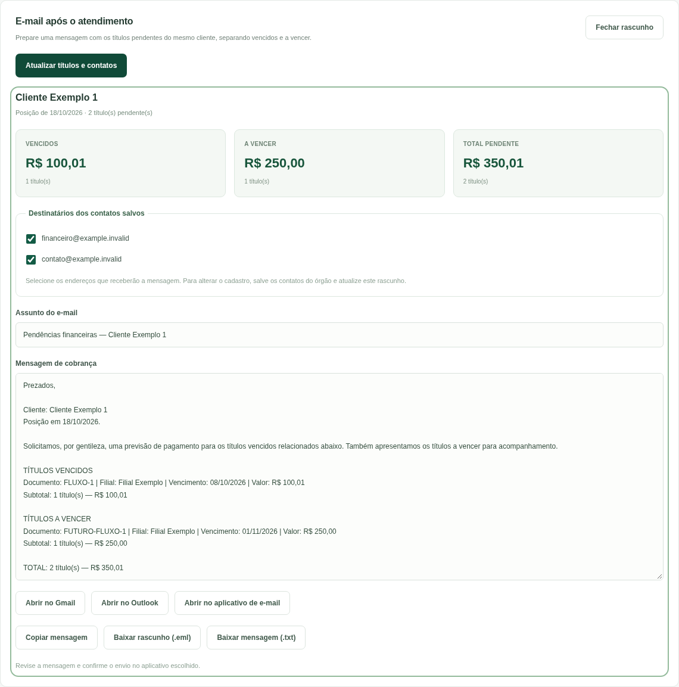
ÁREA 11 · 20 MIN
Menu lateral → Cobrança → Títulos → Atendimento do título → Contatos e descrição do órgão
Manter canais atualizados, consultar o contrato no título e localizar órgãos sem informação de contato.
Quem utiliza: Cobradoras atualizam contatos de sua carteira; Financeiro/Gerência importam apoio e acompanham a qualidade. Diretoria consulta.
Cobrança → Títulos → Abrir → Contatos e descrição do órgão
Expanda Contatos e descrição do órgão. Leia e-mails, telefones, observações dos contatos, última manutenção e revisão. Os contatos são compartilhados entre os títulos desse órgão. Um endereço cadastrado não garante que esteja funcionando: confirme o canal durante o atendimento.
Veja a figura 29.
Cobrança → Atendimento do título → Contatos e descrição do órgão → Salvar contatos e confirmar revisão
Preencha E-mails do órgão, um por linha, e Telefones do órgão, um por linha com DDD quando disponível. Use Observações dos contatos do órgão para instruções permanentes sobre o canal, não para o andamento de uma cobrança específica. Deixe desconhecidos em branco. Clique em Salvar contatos e confirmar revisão e aguarde a confirmação; uma revisão com campos ausentes continua podendo ter pendências.
Veja a figura 29.
Cobrança → Atendimento do título → contatos → Conferir versão atual dos contatos
Se a tela informar conflito, seu rascunho permanece preservado. Clique em Conferir versão atual dos contatos e compare os dados. Use Usar contatos atuais para carregar a versão já salva ou Manter meu rascunho após conferência para revisar e salvar o que foi confirmado. Não sobrescreva um contato atualizado sem comparar.
Cobrança → Atendimento do título → Contatos e descrição do órgão → Descrição do título
Leia a descrição, o contrato e a origem importada. A vinculação utiliza o contexto do documento, filial e cliente; a descrição é exibida na Cobrança. Se houver Conferir descrição ou variantes diferentes, confira a origem antes de escolher como abordar o cliente. A Central não seleciona silenciosamente a descrição mais recente nem permite transformar esse apoio em recebimento.
Cobrança → Títulos → Abrir → Contato e descrição
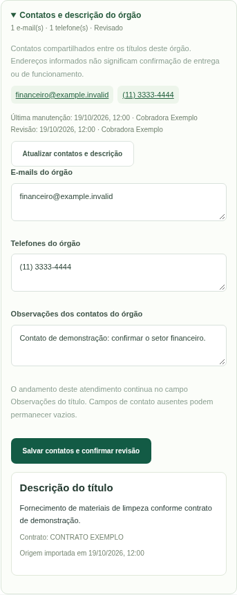
Menu lateral → Importar Bases → Contatos e descrições → Contatos dos clientes
Confira os cabeçalhos do modelo: Entidade: nome; Endereço: email; T. 1: ddd; T. 1: número. Selecione Arquivo de contatos dos clientes e clique em Preparar e conferir arquivo. Arquivos .xlsx e .xlsm de até 16 MB são aceitos nessa área. Confira registros aproveitáveis, contatos ausentes, vínculos, avisos e alterações manuais preservadas. Após revisar, marque a declaração dos avisos quando solicitada e clique em Concluir importação deste arquivo. Campos sem contato ficam vazios; telefones não são marcados como WhatsApp automaticamente.
Veja a figura 31.
Importar Bases → Contatos e descrições
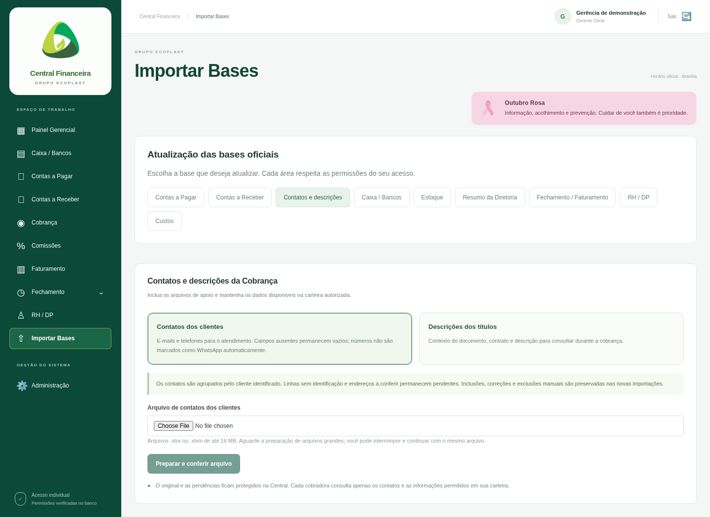
Menu lateral → Importar Bases → Contatos e descrições → Descrições dos títulos
Confira os cabeçalhos: CLIENTE; CONTRATO; NOTA FISCAL; DESCRIÇÃO; FILIAL. O contrato é opcional e a filial deve ser um código inteiro positivo. Selecione Arquivo de descrições dos títulos, clique em Preparar e conferir arquivo e confira os vínculos seguros por título. A primeira carga pode ser maior; nas seguintes, podem entrar somente os novos registros de apoio. Clique em Concluir importação deste arquivo após a conferência. Importe primeiro a base financeira de abertos para que a descrição encontre os títulos. Apoio a títulos a vencer pode ficar guardado, mas aparece no atendimento de Cobrança quando o título vencer.
Veja a figura 32.
Importar Bases → Contatos e descrições → Histórico dos seus arquivos → Conferir
Para arquivo preparado, use Conferir ou Reanalisar arquivo preparado. Para preparação ainda incompleta, selecione novamente o mesmo arquivo original e continue a preparação. Se a conclusão ficar com resposta incerta, use Conferir confirmação pendente. Os registros seguros podem ser publicados e os duvidosos ficam preservados para conferência, conforme a prévia e a declaração apresentada.
Importar Bases → Contatos e descrições → Descrições
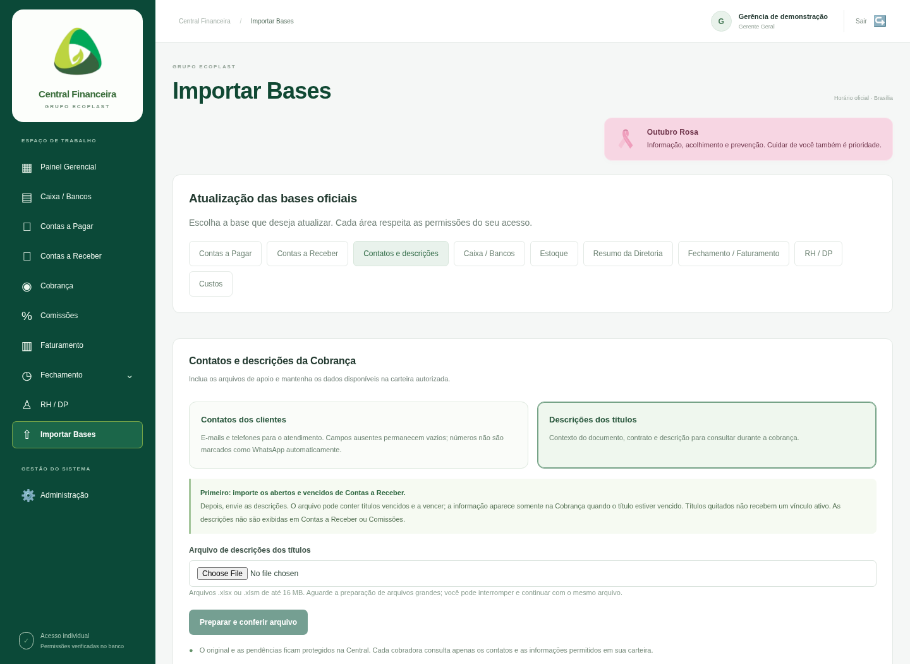
Menu lateral → Cobrança → Contatos → Relatório de contatos
Em Tipo de consulta de contatos, escolha Diretório de contatos. Use Nome do órgão / cliente e Cobertura dos contatos: Sem nenhum contato, Sem e-mail, Sem telefone ou Não revisados. Clique em Consultar contatos. Compare Órgãos na carteira pesquisada, Com algum contato e Revisados manualmente. Esses números são da carteira atual pesquisada; a cobradora consulta seus órgãos autorizados.
Veja a figura 30.
Cobrança → Contatos → Tipo de consulta de contatos → Auditoria de alterações
Para acompanhar manutenção, escolha Auditoria de alterações e informe Alterações a partir de e Alterações até. Clique em Consultar contatos e compare antes, depois, autor e data. Na consulta de diretório, o período usa a última edição. Use Baixar CSV completo dos contatos para exportar o filtro inteiro. O botão Atualizar relatório de contatos consulta novamente os dados.
Veja a figura 30.
Cobrança → Contatos
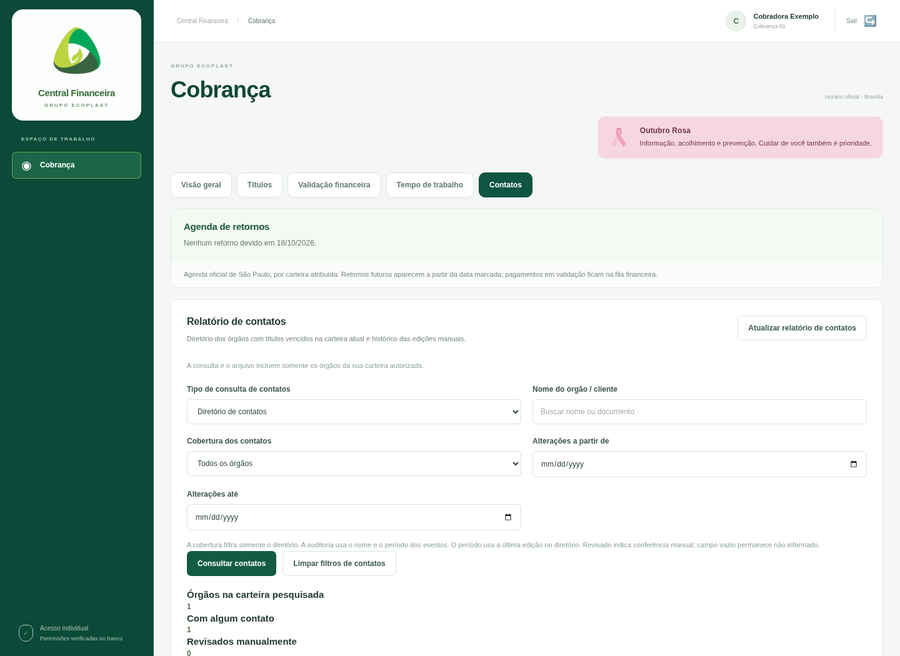
ÁREA 12 · 10 MIN
Menu lateral → Cobrança → Tempo de trabalho
Conferir horas registradas, sessões e títulos trabalhados por período.
Quem utiliza: Cobradoras consultam seus intervalos; supervisão, Gerência e Diretoria consultam conforme permissão.
Menu lateral → Cobrança → Tempo de trabalho
Preencha Início do período de trabalho e Fim do período de trabalho. O período de consulta pode ter até 366 dias. Quando disponível para supervisão, selecione Responsável no tempo de trabalho. Clique em Consultar tempo no período.
Veja a figura 33.
Cobrança → Tempo de trabalho → cards e Tempo por responsável no período
Confira Tempo registrado no período, Sessões de trabalho e Títulos trabalhados. Na tabela por responsável, compare tempo, sessões e títulos. Pausas ficam fora da soma. Uma pessoa pode ter vários intervalos no mesmo título, sem que isso transforme cada intervalo em um título diferente.
Cobrança → Tempo de trabalho → Intervalos de trabalho registrados
Leia cliente/NF, filial, responsável, operador, início, fim e tempo dentro do período. A situação informa Em andamento, Pausada, Concluída ou Encerrada. O operador indica o acesso que registrou o intervalo; isso não troca automaticamente a cobradora responsável pelo cliente. Use Intervalos anteriores e Próximos intervalos para navegar.
Cobrança → Tempo de trabalho → Atualizar tempo registrado
Clique em Atualizar tempo registrado para atualizar também a duração dos intervalos ainda em andamento. A tabela detalhada mostra até 1.000 intervalos; quando o aviso de limite aparecer, reduza o período para consultar outros registros. Os totais continuam considerando o período todo. O relatório não possui botão de exportação de tempo nessa tela.
Cobrança → Tempo de trabalho
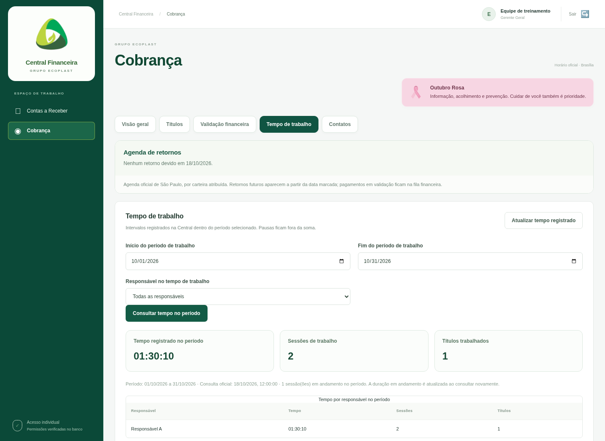
ÁREA 13 · 20 MIN
Menu lateral → Comissões → Comissões — Cobradoras
Conferir a base efetivamente recebida, a faixa de atraso e as pendências sem confundi-las com pagamento de comissão.
Quem utiliza: Gerência, Diretoria e outros perfis autorizados a consultar Comissões; configuração e apuração salva apenas com permissão.
Menu lateral → Comissões → Comissões — Cobradoras
Clique em Comissões — Cobradoras. Leia Fonte da apuração: Central de Cobrança. A base utiliza títulos trabalhados e recebimento validado, com o valor efetivamente recebido. A faixa de atraso é medida na data real do recebimento, não na data de hoje.
Veja a figura 34.
Comissões → Comissões — Cobradoras → filtros → Consultar comissões
Escolha Mês de recebimento ou informe Recebimento inicial e Recebimento final. Selecione Cobradora da comissão e Faixa de atraso quando quiser restringir a consulta. Clique em Consultar comissões. Confira Recebido validado, Comissão apurada, Títulos comissionáveis e Atraso médio no recebimento. Use Atualizar comissões para consultar a posição atual e Limpar filtros para remover responsável e faixa.
Veja a figura 34.
Comissões → Comissões — Cobradoras → Regra de comissão por faixa
A apuração usa cálculo proporcional por título e arredondamento ao centavo: valor recebido na faixa ÷ referência × comissão de referência. Até 30 dias não gera comissão. Faixas atuais: 31–60 dias, referência R$ 200.000,00 e comissão R$ 100,00 (0,05%); 61–90, R$ 100.000,00 e R$ 300,00 (0,30%); 91–180, R$ 100.000,00 e R$ 600,00 (0,60%); 181–365, R$ 80.000,00 e R$ 1.000,00 (1,25%); acima de 365, R$ 35.000,00 e R$ 1.500,00 (aproximadamente 4,2857%). Confira a regra com vigência exibida para o recebimento.
Comissões → Comissões — Cobradoras → Resumo por cobradora / Apuração por faixa / Detalhamento da apuração
Compare os valores por cobradora e por faixa. No detalhamento, clique em Abrir recebimento [documento]. Confira cliente, filial, valor nominal, valor efetivamente recebido, data, atraso, comissão, situação e vigência da regra. Um valor marcado como pendente exige conferência antes da apuração completa. Pagamento sem responsável elegível ou sem regra resolvida não deve ser tratado como comissão concluída.
Veja a figura 34.
Menu lateral → Comissões → Comissões — Cobradoras
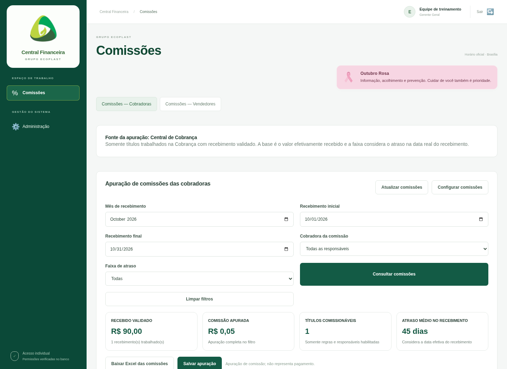
Comissões → Comissões — Cobradoras → Aguardando confirmação de recebimento
Esta fila mostra os títulos trabalhados retirados do relatório completo de abertos e ainda sem confirmação por Quitados. Use Buscar título pendente, Cobradora das pendências e Consultar pendências. Clique em Abrir pendência para ver o valor nominal de referência, a posição do relatório e a data da retirada. A fila é atual e independente do mês de recebimento selecionado acima. Seus valores não entram em Recebido validado, Comissão apurada nem apurações salvas.
Veja a figura 35.
Importar Bases → Contas a Receber → Títulos quitados; depois Comissões → Atualizar pendências
A responsável por Contas a Receber importa o relatório de quitados para confirmar o recebimento real. Depois, use Atualizar pendências e Atualizar comissões. Se o título reaparecer em abertos sem recebimento confirmado, ele volta à carteira e deixa a fila pendente. Não existe botão para inventar uma data ou um valor recebido a partir dessa pendência.
Comissões → Comissões — Cobradoras → Baixar Excel das comissões / Salvar apuração
Quando seu perfil permitir, clique em Baixar Excel das comissões para exportar a seleção completa. A Gerência pode usar Salvar apuração quando a base do filtro estiver completa e sem pendências de regra. Isso guarda uma posição com a base e as versões das regras; não paga comissão. Em Apurações salvas, use Abrir apuração para consultar a posição preservada e Voltar à base atual para retornar à consulta corrente.
Comissões → Comissões — Cobradoras → Configurar comissões
Somente a Gerência autorizada deve usar Configurar comissões. Marque as cobradoras elegíveis entre os cadastros existentes, informe Vigência a partir de e Justificativa da regra e clique em Salvar regra com vigência. Mudanças criam uma versão; apurações salvas preservam a regra usada. Não altere configuração para tentar resolver um título que ainda não tem recebimento real.
Comissões → Cobradoras → Aguardando confirmação de recebimento
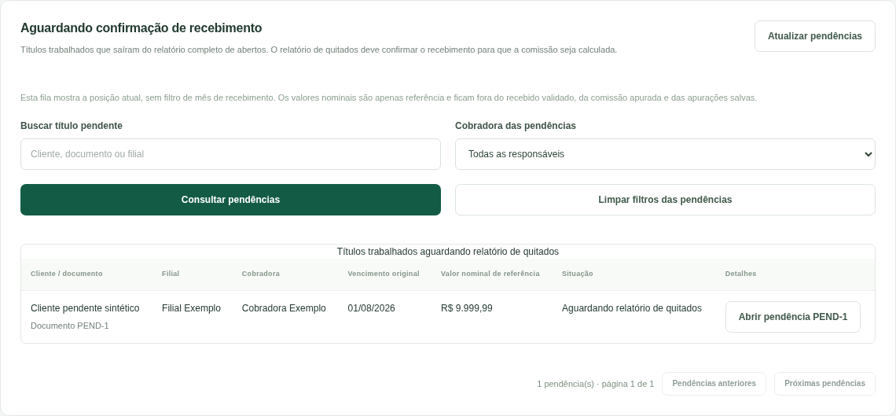
ÁREA 14 · 25 MIN
Menu lateral → Comissões → Comissões — Vendedores
Conferir a comissão por vendedor e vigência, resolver pendências e preservar a posição aprovada para consulta.
Quem utiliza: Diretoria e usuários com consulta de Comissões; Gerência autorizada para configurar regras e salvar apurações
Menu lateral → Comissões → Comissões — Vendedores
Clique em Comissões — Vendedores. A fonte é o fechamento oficial de Faturamento: data de emissão e funcionário identificam os itens. Esta rotina apura valores; não efetua pagamento de comissão.
Veja a figura 36.
Menu lateral → Comissões → Comissões — Vendedores → Mês de faturamento / Emissão inicial / Emissão final
Escolha Mês de faturamento para preencher o intervalo do mês. Se precisar de outro recorte, informe Emissão inicial e Emissão final. Alterar as datas retira a indicação de mês completo. Selecione Vendedor da comissão e Faixa de margem da apuração, se desejar; depois clique em Consultar comissões.
Menu lateral → Comissões → Comissões — Vendedores → Indicadores da apuração
Faturamento no filtro é a base selecionada. Comissão apurada inclui os itens resolvidos. Margem após comissão é calculada para itens com regra resolvida. Se houver pendências, o valor exibido pode ser parcial e o percentual consolidado fica pendente. Não apresente a apuração como concluída enquanto houver itens a conferir.
Veja a figura 36.
Comissões → Comissões — Vendedores
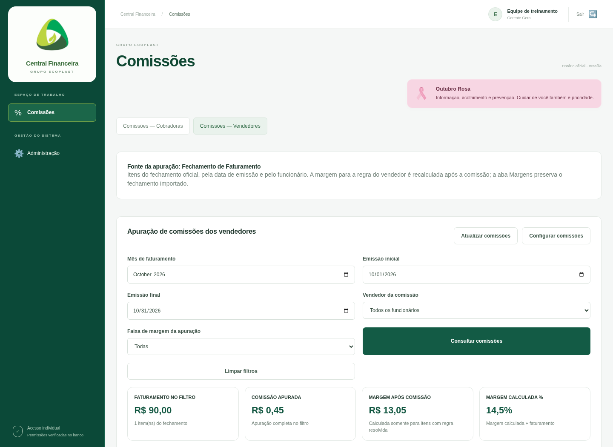
Menu lateral → Comissões → Comissões — Vendedores → Detalhamento da apuração → Abrir venda [NF]
Confira valor da venda, taxa, comissão apurada, situação, vigência da regra, CMV, frete, imposto e margem após a comissão calculada. O detalhe identifica a versão da regra e a revisão da origem. Fechar detalhes retorna à lista.
Veja a figura 37.
Menu lateral → Comissões → Comissões — Vendedores → Políticas de comissão dos vendedores
Leia a política atribuída à pessoa e sua vigência. Comercial usa faixas de margem: abaixo de 10% sem comissão; até 15% taxa de 0,50%; até 20% de 1%; até 25% de 1,50%; até 30% de 2%; acima de 30% de 2,50%. Grandes Contas usa o mínimo da política até menos de 17% com taxa de 0,40%; até 30% com 0,60%; até 35% com 0,80%; acima de 35% com 1%. A regra usa a margem após a própria comissão; limites sem taxa consistente ficam pendentes para conferência, sem escolha automática de taxa.
Menu lateral → Comissões → Comissões — Vendedores → Políticas / Histórico de regras e vigências
Nas políticas Mateus e Kevyn, o mínimo confirmado é 10% para setembro/2026 e 14% desde 01/10/2026. Mateus usa a política de Grandes Contas e tem regra de COMLURB de 0,30%; Kevyn usa 0,40% a partir do mínimo aplicável. Não aplique o mínimo de outubro retroativamente a setembro. Na política Francisco, PRIVADO segue Comercial e GRANDES CONTAS — FRANCISCO/WELLINGTON segue Grandes Contas; os outros centros não geram comissão nessa política.
Menu lateral → Comissões → Comissões — Vendedores → Detalhamento da apuração → Situação
Responsável pendente exige conferir o funcionário no fechamento. Regra / vigência pendente exige cadastro autorizado. Custos do fechamento incompletos exigem corrigir a fonte. Conferir limite de faixa exige análise da regra. Conferir venda / devolução exige validar o lançamento de origem. A Diretoria consulta; a correção pertence ao responsável pela base ou pela configuração.
Comissões → Vendedores → Abrir venda
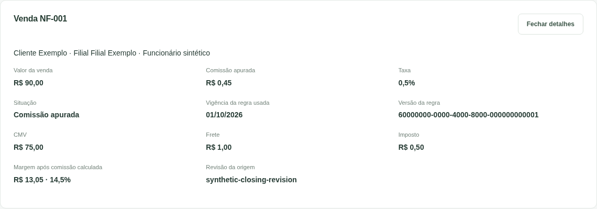
Menu lateral → Comissões → Comissões — Vendedores → Configurar comissões
A Gerência autorizada seleciona Funcionário do fechamento, Política do vendedor, Margem mínima confirmada (%), Vigência a partir de e Justificativa da regra. Clique em Salvar regra com vigência para criar uma versão. Recuperar regras confirmadas serve para recuperar as políticas já confirmadas, após selecionar a pessoa real e registrar a justificativa. Não crie vínculos ou taxas apenas por semelhança de nome.
Veja a figura 38.
Menu lateral → Comissões → Comissões — Vendedores → Salvar apuração
Depois de resolver todas as pendências e conferir período e vendedor, o perfil autorizado pode clicar em Salvar apuração. O botão exige apuração completa, com itens e até 5.000 itens no filtro. A posição salva preserva valores, origens e regras daquela apuração. Não representa autorização de pagamento nem pagamento realizado.
Menu lateral → Comissões → Comissões — Vendedores → Apurações salvas → Abrir apuração [data]
Abra a apuração desejada e observe a indicação Apuração salva em. Novas importações ou regras não reescrevem essa posição. Use Voltar à base atual para retornar ao cálculo da base vigente.
Menu lateral → Comissões → Comissões — Vendedores → Baixar Excel das comissões
Quando autorizado, exporte a apuração atual ou a posição salva aberta. O arquivo inclui os itens do filtro e as versões das regras. Se a base mudar durante a exportação, atualize a consulta antes de gerar outro arquivo.
Comissões → Configurar comissões
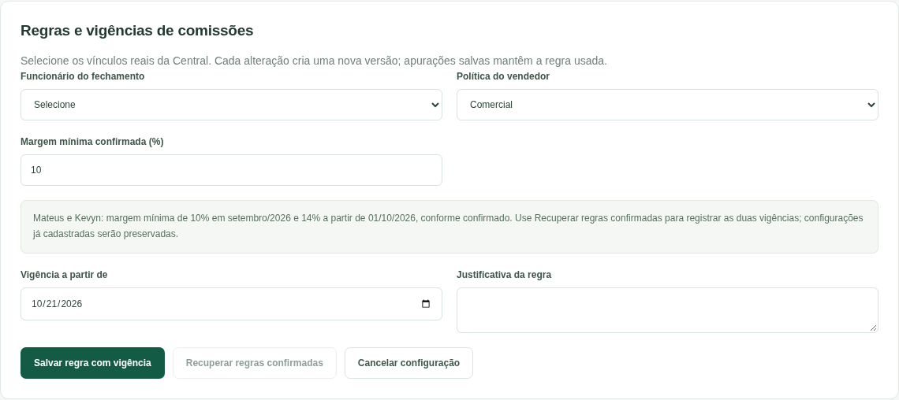
ÁREA 15 · 15 MIN
Menu lateral → Faturamento
Localizar os itens de um fechamento, conferir a origem e obter um relatório com o filtro correto.
Quem utiliza: Diretoria, Gerência e usuários com consulta de Faturamento
Menu lateral → Faturamento → Mês do fechamento
Selecione o mês que pretende analisar. A opção Último fechamento consulta a posição mais recente disponível. Confira o mês no card Faturamento e o nome/data do arquivo em Base atualizada até antes de comparar valores.
Veja a figura 39.
Menu lateral → Faturamento → Indicadores de faturamento
Faturamento mostra todos os itens da base do mês. Faturamento filtrado mostra somente a seleção atual. Registros filtrados informa quantos itens foram encontrados. Base atualizada até identifica quando a base foi atualizada; não é uma promessa de que o sistema de origem já esteja atualizado.
Veja a figura 39.
Menu lateral → Faturamento → Buscar item
Digite código, produto, cliente, NF ou funcionário. Aguarde a atualização da lista. A pesquisa alcança os itens do mês inteiro; não se limita à página que está visível.
Menu lateral → Faturamento → Filial / Centro de custo / Funcionário
Escolha os filtros necessários para a pergunta que deseja responder. Por exemplo, selecione uma filial e um funcionário para ver somente aquela combinação. O card Faturamento filtrado e a contagem de registros devem acompanhar a seleção. Use Limpar filtros para retirar os recortes e manter o mês escolhido.
Menu lateral → Faturamento
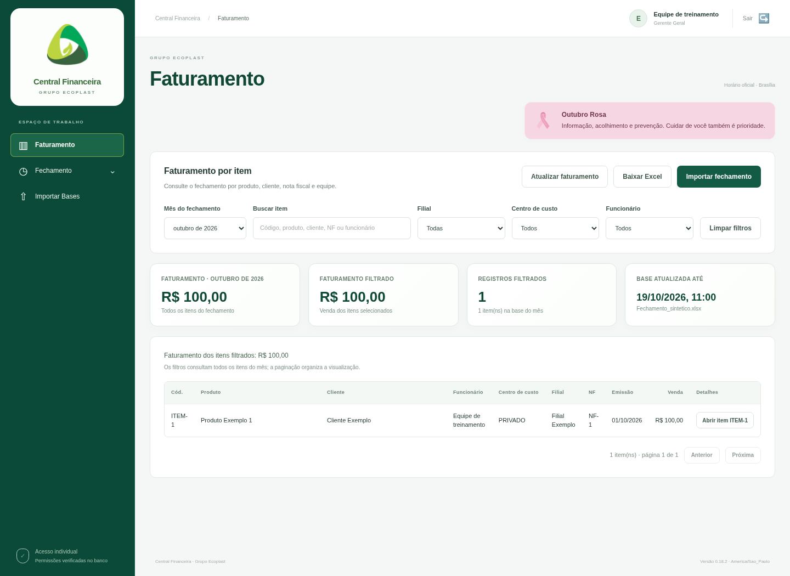
Menu lateral → Faturamento → Tabela Itens do faturamento → Abrir item [código]
Localize o item e clique em Abrir item. Confira cliente, filial, funcionário, centro de custo, emissão, quantidade e venda. O detalhe também mostra os componentes da margem, o arquivo de origem e a linha no relatório. Quando terminar, clique em Fechar item.
Veja a figura 40.
Menu lateral → Faturamento → Tabela Itens do faturamento → Anterior / Próxima
A lista é paginada. Os cards consideram todos os itens encontrados, mesmo quando a tela mostra apenas uma página. Use Anterior e Próxima para percorrer as linhas sem somar manualmente apenas os itens visíveis.
Menu lateral → Faturamento → Baixar Excel
Com os filtros conferidos, clique em Baixar Excel, quando o seu perfil permitir. O arquivo contém os itens do filtro inteiro e uma aba Consulta com mês, origem e critérios usados. Para mais de 20.000 itens, restrinja os filtros. Se a base mudar durante a exportação, atualize a consulta e gere novamente.
Menu lateral → Faturamento → Importar fechamento
Se o botão Importar fechamento estiver disponível, ele leva à importação correspondente. A base deve ser corrigida e atualizada por Fechamento / Faturamento; a tabela de consulta não permite editar o valor de uma venda. A Diretoria utiliza a consulta e a exportação autorizada.
Faturamento → Abrir item
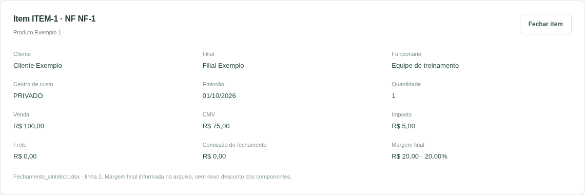
ÁREA 16 · 30 MIN
Menu lateral → Fechamento → Dashboards / Margens / Custos
Consultar os dashboards do fechamento, detalhar a margem por item e consultar a base de custos, reconhecendo as origens dos valores e as ações permitidas ao seu acesso.
Quem utiliza: Diretoria, Gerência e usuários com consulta de Margens
Menu lateral → Fechamento
Clique em Fechamento no menu lateral. A página principal mostra os dashboards do fechamento, e as opções Margens e Custos aparecem logo abaixo de Fechamento na barra lateral. Clique novamente em Fechamento para recolher essas opções; os dashboards continuam na página principal. Para detalhar os itens, expanda Fechamento e clique em Margens. Para consultar o catálogo, clique em Custos. Faturamento continua em sua própria área do menu. A Diretoria consulta os dashboards e as duas opções, sem importar ou aplicar alterações.
Veja a figura 65 e a figura 66.
Menu lateral → Fechamento → Mês dos dashboards do fechamento
Em Mês dos dashboards do fechamento, escolha a referência e confira o arquivo e a data da base. Compare Venda total, CMV total, Margem do fechamento e Margem do fechamento %. Confira também os itens, os itens sem margem, os impostos, os fretes e as comissões do fechamento. Os gráficos Venda e margem por filial e Venda e margem por centro de custo mostram a composição do mês consultado. Não informado significa que falta um componente na origem; não trate essa indicação como custo zero. Use Atualizar dashboards para conferir a base novamente antes de comparar os valores com o detalhamento em Margens.
Veja a figura 65 e a figura 66.
Menu lateral → Fechamento
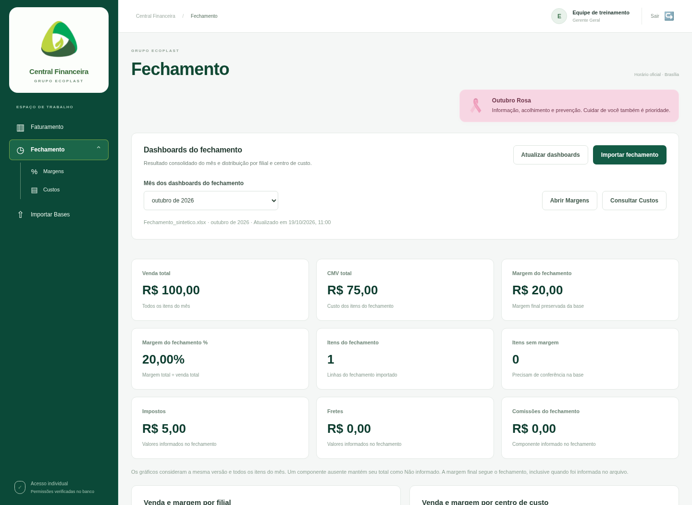
Menu lateral → Fechamento → Gráficos do mês
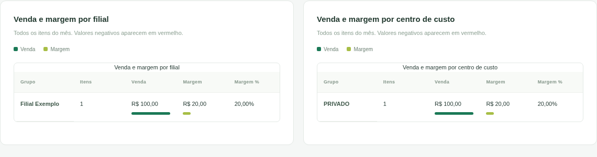
Menu lateral → Fechamento → Margens → Mês do fechamento
Escolha o mês e confirme que ele é o mesmo da análise de Faturamento. Clique em Atualizar margens para consultar novamente a base, especialmente depois de uma importação ou aplicação de custos.
Veja a figura 41.
Menu lateral → Fechamento → Margens → Indicadores de margem
Margem líquida e Margem líquida % consideram todos os itens do fechamento. Margem filtrada e Margem filtrada % consideram o recorte atual. O percentual consolidado é a margem total dividida pela venda total; não é a média simples dos percentuais das linhas.
Veja a figura 41.
Menu lateral → Fechamento → Margens → Faixa de margem final
Selecione a faixa, por exemplo Abaixo de 10%, e combine com Filial e Funcionário quando necessário. Buscar item permite localizar código, produto, cliente ou NF. Limpar filtros remove os recortes e mantém o mês selecionado.
Menu lateral → Fechamento → Margens → Tabela Margens por item do fechamento
Compare Venda, CMV, Imposto, Frete, Comissão, Margem final e % final. Não informado indica ausência de um dado necessário. Um custo desconhecido não deve ser tratado como custo zero conhecido.
Menu lateral → Fechamento → Margens
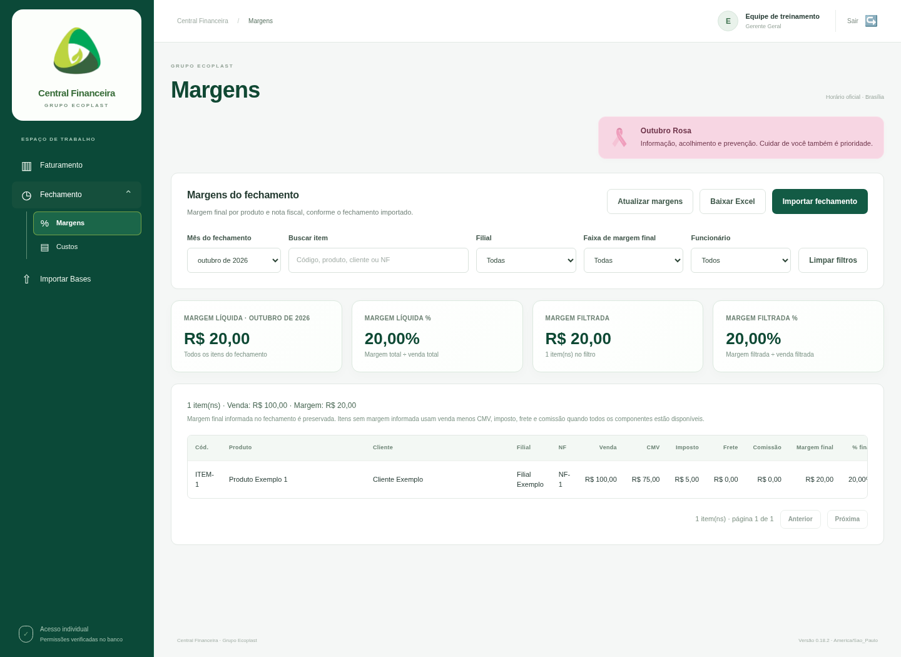
Menu lateral → Fechamento → Margens → Abrir item [código]
No detalhe, confira a mensagem de origem. Quando o fechamento informa a margem final, ela é preservada sem descontar os componentes uma segunda vez. Quando a margem não é informada e todos os componentes estão presentes, a Central calcula venda menos CMV, imposto, frete e comissão.
Veja a figura 42.
Menu lateral → Fechamento → Margens → Abrir item [código] → Conferência da origem
Anote mês, código, NF, filial e linha do arquivo. Se houver informação errada no fechamento, solicite a correção da base e a reimportação do mês. Se a atualização é do custo unitário, use Importar Bases → Custos e confira o impacto antes de aplicar a nova versão.
Menu lateral → Fechamento → Margens → Baixar Excel
Com permissão de exportação, baixe o Excel do filtro. Ele inclui os componentes da margem e a indicação de origem da margem. O arquivo permite conferir todos os itens encontrados, e não só a página visível.
Menu lateral → Fechamento → Margens / Menu lateral → Comissões → Comissões — Vendedores
A aba Margens acompanha o fechamento importado ou sua nova versão após aplicar custos. A apuração de vendedores recalcula a margem após a própria comissão, conforme a política vigente. Os dois resultados podem ter naturezas diferentes; confira origem e regra antes de comparar diretamente.
Fechamento → Margens → Abrir item

Menu lateral → Fechamento → Custos → Custos cadastrados e histórico
Selecione a Versão da base de custos, pesquise em Buscar código ou produto e clique em Consultar custos. Confira arquivo, referência, código, produto, peso e custo unitário; percorra as páginas quando necessário. Importar custos abre a área correspondente em Importar Bases somente para acessos autorizados. Aplicar custos ao fechamento aparece somente para quem tem autorização de aplicação; consulte o capítulo próprio antes de confirmar qualquer recálculo. Consultar ou trocar de opção no menu lateral não altera o fechamento.
Veja a figura 64.
Menu lateral → Fechamento → Custos
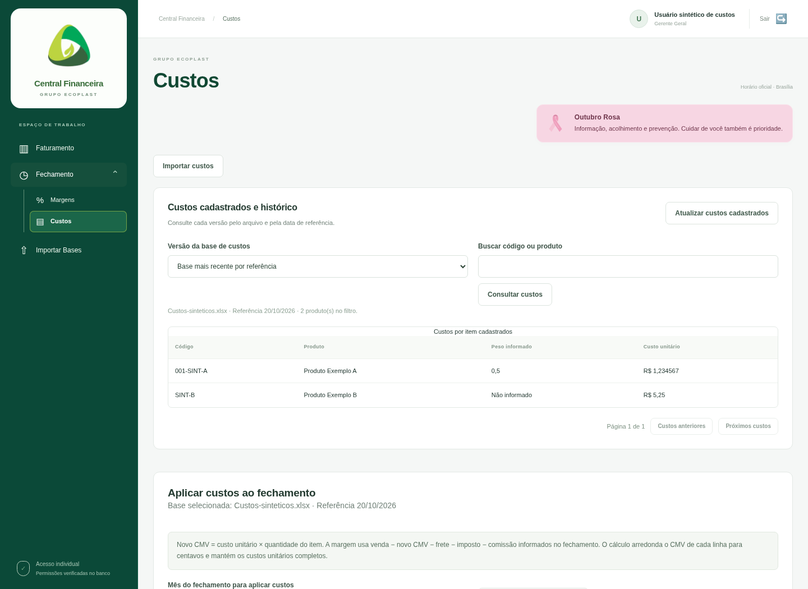
ÁREA 17 · 25 MIN
Menu lateral → RH / DP
Ler corretamente os indicadores, separar salários e pró-labores, conferir os dados das pessoas e consultar o calendário.
Quem utiliza: RH/DP, Gerência e Diretoria com acesso autorizado
Menu lateral → RH / DP
A aba usa a posição de RH mais recente por data de referência. Confira a origem exibida e clique em Atualizar RH / DP quando houver nova importação. Sem base, os indicadores ficam indisponíveis; não devem ser interpretados como ausência de funcionários ou custo zero.
Veja a figura 43.
Menu lateral → RH / DP → Cards Colaboradores / Sócios
Colaboradores exclui os registros com setor SÓCIO. Sócios são acompanhados separadamente. Na lista de pessoas, Tipo de remuneração identifica Salário ou Pró-labore. Se alguém foi classificado de forma errada, corrija o SETOR na origem e reimporte a posição completa.
Menu lateral → RH / DP
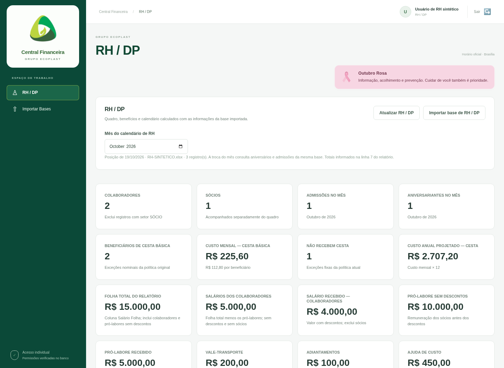
Menu lateral → RH / DP → Folha total do relatório / Salários dos colaboradores / Pró-labore sem descontos
Folha total do relatório reúne os valores sem descontos da coluna Salário Folha para colaboradores e sócios. Salários dos colaboradores exclui sócios. Pró-labore sem descontos contém os valores dos sócios antes dos descontos. A folha total deve ser explicada junto dessas duas parcelas, sem classificar pró-labores como salário.
Veja a figura 43 e a figura 44.
Menu lateral → RH / DP → Salário recebido — colaboradores / Pró-labore recebido
Salário recebido — colaboradores usa a coluna Salário recebido, já com descontos e sem sócios. Pró-labore recebido acompanha os sócios após descontos. Não substitua remuneração bruta pela recebida e não desconte novamente valores já líquidos.
Menu lateral → RH / DP → Vale-transporte / Adiantamentos / Ajuda de custo / Total de remunerações e benefícios
Vale-transporte vem de VT TOTAL. Adiantamentos e Ajuda de custo seguem suas colunas. Total de remunerações e benefícios usa TOTAL do relatório e a linha final de totais, quando presente; não é recalculado somando todas as outras colunas. Confira também os subtotais de colaboradores e sócios indicados no card.
Menu lateral → RH / DP → Beneficiários de cesta básica / Custo mensal — cesta básica
A política atual usa R$ 112,80 por beneficiário e mantém as exceções nominais cadastradas. Custo anual projetado — cesta é custo mensal multiplicado por 12; é uma projeção simples, não um pagamento já realizado. Na tabela, Cesta básica e Custo cesta mostram a classificação por pessoa.
RH / DP → Indicadores de remuneração
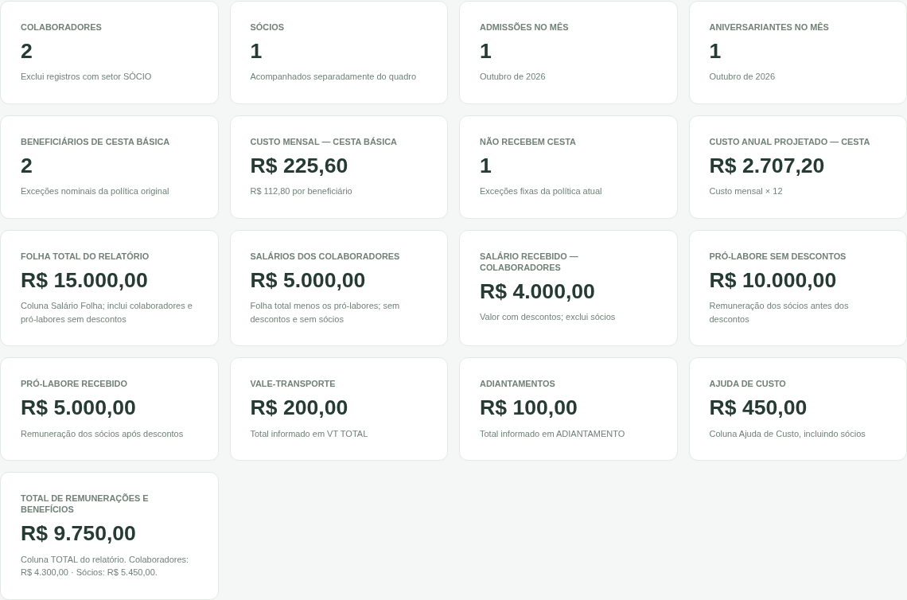
Menu lateral → RH / DP → Mês do calendário de RH / Calendário de aniversários e tempo de empresa
Selecione ano e mês no campo Mês do calendário de RH ou use os botões de meses no calendário. Confira Aniversariantes do mês e Aniversário de empresa. O tempo de empresa indica os anos completados naquele mês. Esse seletor altera o calendário e as contagens mensais; não troca a posição salarial por uma folha histórica.
Veja a figura 45.
Menu lateral → RH / DP → Conferência dos dados da base
Observe quantos registros estão sem admissão, aniversário, filial, setor, remunerações ou total. Nas novas importações, VT TOTAL, Adiantamento e Ajuda de Custo em branco ou com traço valem zero quando a coluna está presente. Coluna ausente ou informação desconhecida permanece Não informado. Corrija dados de cadastro no relatório de origem e reimporte.
RH / DP → Calendário
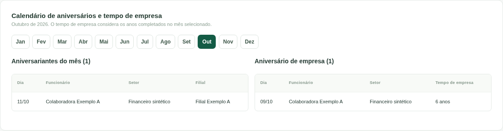
Menu lateral → RH / DP → Pessoas da base → Buscar pessoa / Filial de RH / Setor de RH
Pesquise por funcionário, filial ou setor e combine filtros quando necessário. Percorra as páginas para conferir admissão, aniversário, tipo de remuneração, benefícios e TOTAL informado. Os filtros dessa seção alteram a lista e a exportação; não transformam os cards gerais em totais da pessoa selecionada.
Veja a figura 46.
Menu lateral → RH / DP → Pessoas da base → Baixar relatório de RH / DP
Quando o seu perfil permitir, clique em Baixar relatório de RH / DP. A exportação registra a seleção, a origem e os critérios de cálculo. Os indicadores gerais e os subtotais do filtro têm identificações próprias; confira qual valor está utilizando. Encaminhe o arquivo apenas às pessoas autorizadas a receber dados de RH.
Menu lateral → RH / DP → Importar base de RH / DP
O botão, quando disponível, leva ao envio da posição completa. As remunerações não são alteradas diretamente na tabela de consulta. As posições antigas permanecem preservadas, mas o seletor de calendário não é um seletor de versões da folha.
RH / DP → Pessoas da base
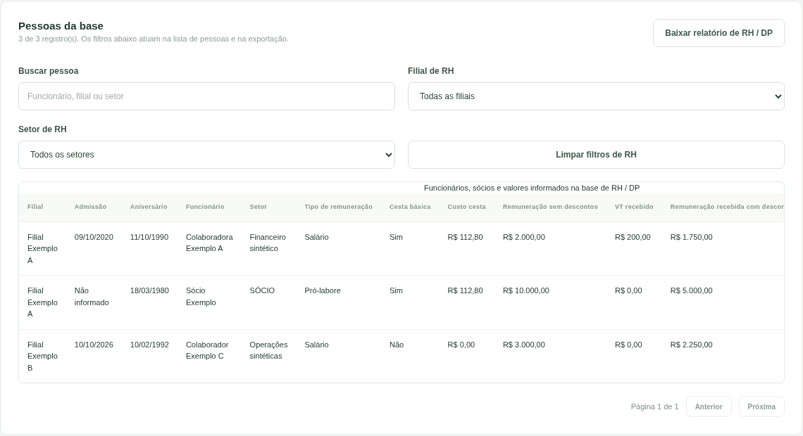
ÁREA 18 · 15 MIN
Menu lateral → Importar Bases → Área desejada
Escolher a base correta, analisar sem alterar os dados e concluir a atualização com conferência e rastreabilidade.
Quem utiliza: Operadores autorizados a importar,Gerência Geral
Menu lateral → Importar Bases → Atualização das bases oficiais
Entre em Importar Bases e clique na área desejada. Somente as áreas autorizadas para sua conta aparecem. A Diretoria não acessa esta página. Estoque e Resumo da Diretoria usam formulários próprios; não exigem uma planilha no mesmo formato dos títulos.
Veja a figura 47.
Importar Bases → Abas das bases oficiais
As nove opções são: Contas a Pagar; Contas a Receber; Contatos e descrições; Caixa / Bancos; Estoque; Resumo da Diretoria; Fechamento / Faturamento; RH / DP; Custos. Nem toda conta vê as nove. A concessão individual de todas as importações para uma pessoa de Contas a Receber deve ter sido autorizada e aplicada pelo responsável técnico.
Importar Bases → Contas a Pagar ou Contas a Receber → Tipo de relatório
Em CP, escolha previsões/novos títulos ou pagamentos realizados conforme o arquivo. Em CR, escolha Abertos e vencidos ou Títulos quitados. Não use um arquivo de pagamentos como previsão, nem um relatório de abertos como confirmação de recebimento. O tipo determina como os campos de data e valor serão interpretados.
Sistema de origem → Exportação → Cópia do relatório para importação
Mantenha os cabeçalhos esperados na primeira linha e confira se as colunas de valor, data, documento e filial estão alinhadas. Remova apenas elementos que não façam parte da base segundo a orientação da área; não exclua títulos apenas porque parecem repetidos. Parcelas da mesma nota podem ser distintas. Arquivos .xls antigos devem ser salvos em uma cópia .xlsx quando a tela assim orientar.
Importar Bases → Área escolhida → Texto de ajuda ao lado do arquivo
Leia os limites informados naquela área antes de enviar. Nos importadores comuns de títulos, fechamento, RH e custos, a tela informa até 2 MiB e 5.000 registros; há regras próprias para abas preenchidas e cabeçalhos. Não aplique uma regra genérica de fórmulas a todas as bases: CR e fechamento exigem valores válidos sem fórmulas; RH pode utilizar o resultado numérico salvo pelo Excel, sem executar a fórmula. Macros não são executadas.
Importar Bases → Área escolhida → Mês, Data de referência ou Abrangência do relatório
Preencha os campos do formulário antes de analisar. Um relatório completo representa todas as filiais e todos os títulos abertos da mesma origem; um arquivo parcial deve usar inclusão/atualização. A ausência de um título não tem o mesmo efeito em CP e CR: siga a conferência própria de cada área. A data de referência de uma posição não deve ser confundida com data real de pagamento ou recebimento.
Importar Bases → Selecionar arquivo → Declaração, quando houver → Analisar arquivo / Analisar pagamentos / Analisar fechamento
Selecione o arquivo e leia a declaração de conteúdo, quando exibida. Clique no botão de análise da área e confira quantidade de registros, total, data/período e mensagens. A análise prepara a conferência; ela não substitui o comando final de confirmação.
Importar Bases → Prévia → Campos de vínculo / Classificação → Validar escolhas ou Reanalisar
Escolha o Centro de Custo Macro de planos novos em CP, a conta oficial de bancos que precisem de vínculo e a responsável de clientes sem carteira em CR. Se uma nota possui parcelas parecidas, confira se a linha atualiza uma parcela existente ou representa uma nova parcela. Depois de alterar escolhas, valide ou reanalise o mesmo arquivo antes de confirmar.
Importar Bases → Botão final da área → Confirmação → Mensagem de conclusão → Histórico
Leia a confirmação e conclua apenas quando todos os dados estiverem conferidos. Aguarde a mensagem de sucesso e confira o histórico ou a posição resultante. Abra depois a área consumidora — CP, CR, Cobrança, Painel, RH, Faturamento ou Margens — e confira o mesmo período e os valores correspondentes. Uma prévia aberta na tela não significa que a importação foi concluída.
Pasta da equipe → Arquivo original / Identificação da importação / Conferência do resultado
Guarde o relatório original segundo a organização da equipe e registre o período e o nome do arquivo utilizado. A Central preserva os arquivos e o histórico conforme o fluxo de cada módulo; o operador deve continuar identificando qual arquivo serviu a cada atualização. O arquivo de apoio de extrato bancário, isoladamente, não baixa títulos nem atualiza saldos.
Menu lateral → Importar Bases

ÁREA 19 · 5 MIN
Menu lateral → Importar Bases → Estoque
Registrar o total de estoque com data e fonte, conferir o histórico e entender seu uso no Painel.
Quem utiliza: Responsável pela conferência de estoque e usuários autorizados em Importar Bases; Diretoria consulta
Menu lateral → Importar Bases → Estoque → Estoque manual
Leia VALOR ESTIMADO DO ESTOQUE e a referência. Clique em Atualizar posição e histórico para consultar novamente. A posição vigente usa a data de referência mais recente; na mesma data, usa o registro mais recente.
Veja a figura 48.
Menu lateral → Importar Bases → Estoque → Registrar posição de estoque
Informe Data de referência do estoque, Valor total do estoque (R$) e Observação da posição de estoque. Registre a fonte da conferência. Use até duas casas decimais, valor não negativo e data até hoje. Deixe pendente a informação que ainda não foi conferida; não substitua falta de dado por zero.
Veja a figura 48.
Menu lateral → Importar Bases → Estoque → Salvar posição de estoque
Clique em Salvar posição de estoque, revise data e valor na confirmação e conclua. Aguarde a mensagem de sucesso. Em caso de resposta incerta, use Atualizar posição e histórico e confira se o registro já consta antes de repetir.
Veja a figura 48.
Menu lateral → Importar Bases → Estoque → Histórico do estoque
Confira data de referência, valor, horário, responsável e observação no histórico. Use Anterior e Próxima se necessário. Depois clique em Ir para o Painel Gerencial ou consulte Caixa / Bancos. O dado é o mesmo nas áreas; não precisa cadastrá-lo novamente em cada tela.
Veja a figura 48 e a figura 03.
Importar Bases → Estoque
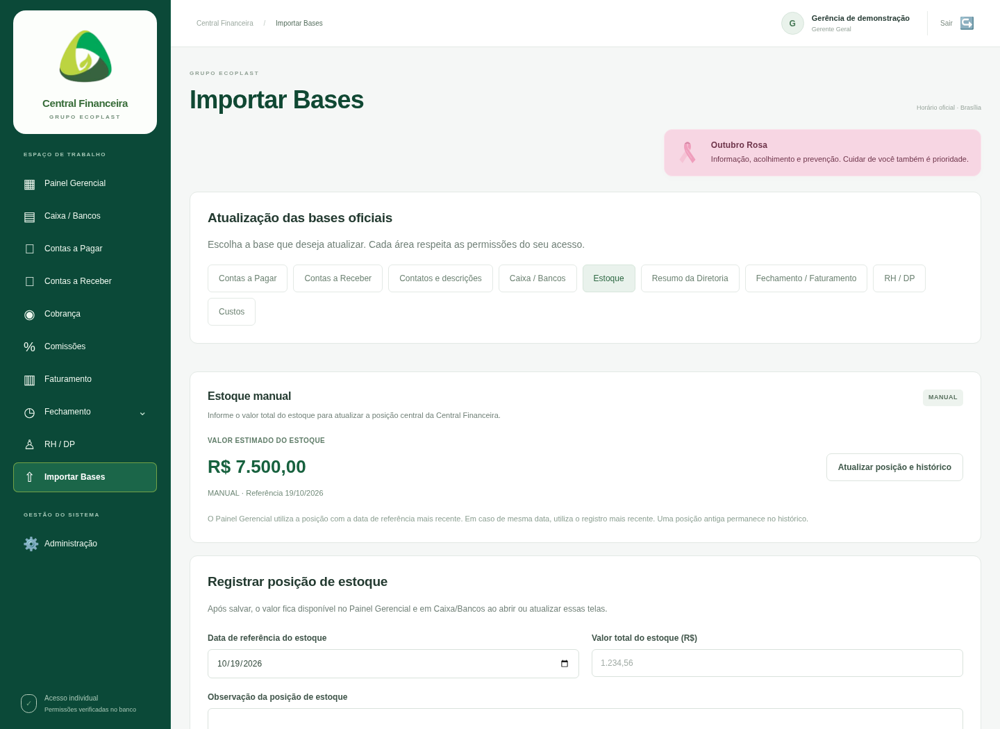
ÁREA 20 · 8 MIN
Menu lateral → Importar Bases → Resumo da Diretoria; consulta: Menu lateral → Painel Gerencial → Resumo da Diretoria
Completar os indicadores do relatório diário e conferir a posição consolidada, o ativo circulante e a versão compartilhada.
Quem utiliza: Gerência e usuários autorizados aos complementos; Diretoria consulta o resultado
Menu lateral → Importar Bases → Resumo da Diretoria → Data de referência do resumo
Selecione a data e clique em Atualizar posição salva. Se já houver posição para a data, abra Conferir valores salvos desta data. Uma alteração cria nova versão e preserva a anterior. Os complementos valem para a data selecionada; não são repetidos automaticamente no dia seguinte.
Veja a figura 49.
Menu lateral → Importar Bases → Resumo da Diretoria → Informar indicadores da posição → Comercial
Preencha Faturamento mês (exceto COMLURB), Faturamento COMLURB, Valor de pedido em sistema, Valor de pedidos bloqueados e Valor total pendência. Faturamento geral soma os dois faturamentos; não inclua COMLURB novamente no campo que já deve excluí-la.
Veja a figura 49.
Menu lateral → Importar Bases → Resumo da Diretoria → Financeiro / Obrigações
Preencha Atrasado COMLURB, Parcelamentos e Impostos do mês passado com os valores conferidos. O atraso COMLURB deve estar de acordo com a carteira central vencida. Caixa, total a receber, estoque e compra de mercadoria são consultados das bases centrais; não existem campos de repetição desses totais nesse formulário.
Veja a figura 49.
Menu lateral → Importar Bases → Resumo da Diretoria → Observação dos indicadores → Salvar indicadores da Diretoria
Deixe em branco o que ainda não foi confirmado. Use 0,00 somente para um zero real. Escreva a fonte e os pontos de conferência em Observação dos indicadores. Clique em Salvar indicadores da Diretoria, confira a confirmação e aguarde o sucesso.
Veja a figura 49.
Menu lateral → Painel Gerencial → Resumo da Diretoria → Ativo circulante (milhões)
Use Atualizar agora. Confira os componentes da memória de cálculo: caixa + contas a receber + estoque − impostos do mês passado − 14% do faturamento geral − pagamento de mercadoria − parcelamentos. O resultado é dividido por um milhão e exibido com duas casas decimais. A fórmula não usa M49. Sem um componente obrigatório, o cálculo permanece aguardando informações.
Veja a figura 03.
Menu lateral → Painel Gerencial → Resumo da Diretoria → Salvar posição
Com os números conferidos e a permissão da Gerência, clique em Salvar posição para guardar uma cópia da posição atual. Use Histórico das posições para consultar o que foi salvo, Baixar Excel para gerar as abas de detalhamento e memória do cálculo ou Imprimir / PDF para a impressão do navegador. A consulta histórica preserva a versão salva; não é recalculada retroativamente pelas importações seguintes.
Veja a figura 03.
Importar Bases → Resumo da Diretoria
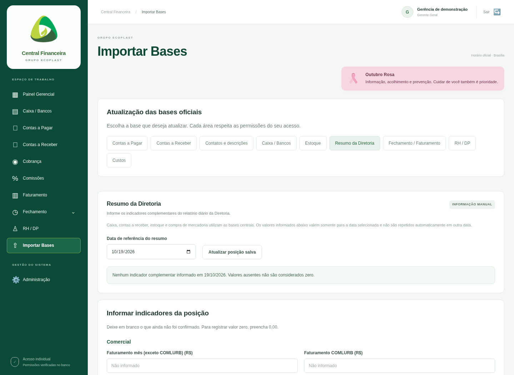
ÁREA 21 · 20 MIN
Menu lateral → Importar Bases → Fechamento / Faturamento
Atualizar a base completa de um mês que alimenta Faturamento, Margens e a apuração de comissões dos vendedores.
Quem utiliza: Operadores com permissão de importação de fechamento e consulta de Faturamento
Menu lateral → Importar Bases → Fechamento / Faturamento
Selecione Fechamento / Faturamento na faixa de áreas. A seção se chama Faturamento e Margens. Uma única base de itens alimenta as duas abas; não é necessário importar cópias separadas de faturamento e margem.
Veja a figura 50.
Menu lateral → Importar Bases → Fechamento / Faturamento → Como preparar o relatório
Use a primeira linha como cabeçalho. Os campos obrigatórios incluem Produto, Venda total, Emissão, Cliente e Filial. Código, Nota fiscal, Funcionário comissionado e Centro de custo permitem o detalhamento e filtros. Para recálculo posterior por custos, mantenha Código e Quantidade corretos; peso cadastral não substitui quantidade vendida.
Menu lateral → Importar Bases → Fechamento / Faturamento → Como preparar o relatório
Inclua Margem líquida final R$ ou os componentes CMV total, Imposto total, Frete total e Comissão total. A margem informada será preservada; se estiver ausente e todos os componentes existirem, será calculada. Salve uma cópia somente com valores, sem fórmulas. Dado ausente não deve ser preenchido com zero apenas para desbloquear a análise.
Menu lateral → Importar Bases → Fechamento / Faturamento → Mês da base de faturamento / Planilha de faturamento e margens
Informe o mês exato da base e selecione o relatório completo. Esse campo determina qual posição mensal será atualizada. Todos os itens devem ter emissão dentro desse mês; não use a data da importação no lugar da competência.
Menu lateral → Importar Bases → Fechamento / Faturamento → Analisar fechamento
Clique em Analisar fechamento. Se aparecer Linhas do fechamento que precisam de correção, leia Linha, Coluna, Problema e Como corrigir. Corrija a cópia de origem, selecione o arquivo ajustado e analise novamente. A prévia não é a confirmação da importação.
Importar Bases → Fechamento / Faturamento
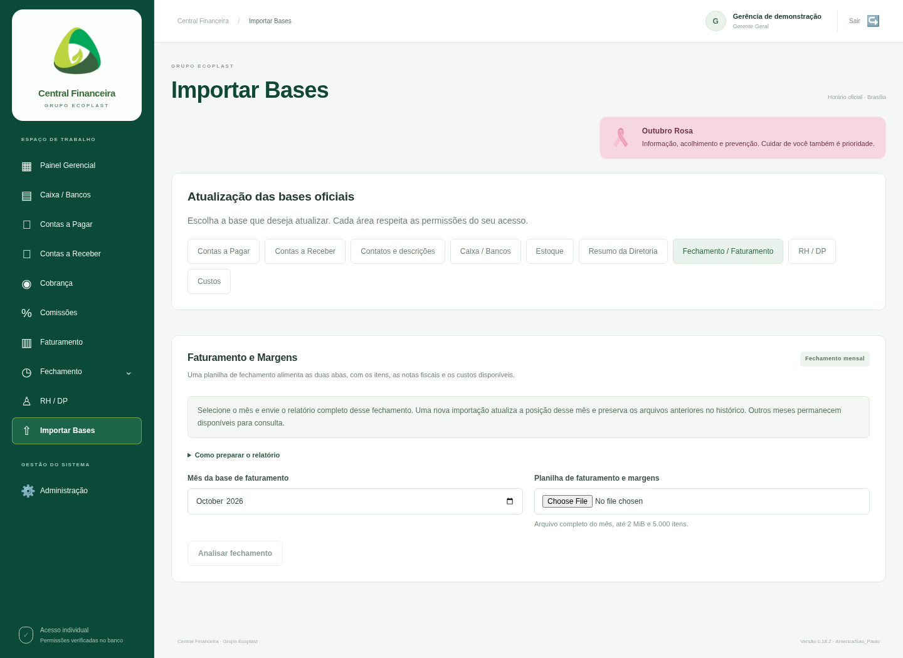
Menu lateral → Importar Bases → Fechamento / Faturamento → Conferência do fechamento
Compare Itens no relatório, Faturamento informado e Margem final com o arquivo do mês. Confira na amostra código, produto, filial, NF, venda e margem. A tabela de amostra exibe até dez itens; a confirmação importa todos os itens analisados.
Veja a figura 51.
Menu lateral → Importar Bases → Fechamento / Faturamento → Conferi o mês e os totais → Confirmar importação do fechamento
Marque a declaração de que conferiu o mês, os totais e a abrangência completa. Clique em Confirmar importação do fechamento e aguarde a mensagem de conclusão. Uma nova importação atualiza a posição daquele mês; os arquivos anteriores e os outros meses ficam preservados.
Menu lateral → Faturamento / Menu lateral → Fechamento → Margens → Mês do fechamento
Selecione o mês importado e clique em Atualizar faturamento ou Atualizar margens quando necessário. Confira os totais e abra um item. Depois, se aplicável, atualize a consulta de Comissões — Vendedores e confira as regras e pendências.
Menu lateral → Importar Bases → Fechamento / Faturamento → Conferir novamente
Se o sistema informar que a confirmação não chegou, mantenha o mesmo arquivo na tela e use Conferir novamente. Confira a posição antes de reenviar outra base. Se a base tiver mudado, siga a nova análise solicitada.
Importar Bases → Fechamento / Faturamento → Analisar fechamento
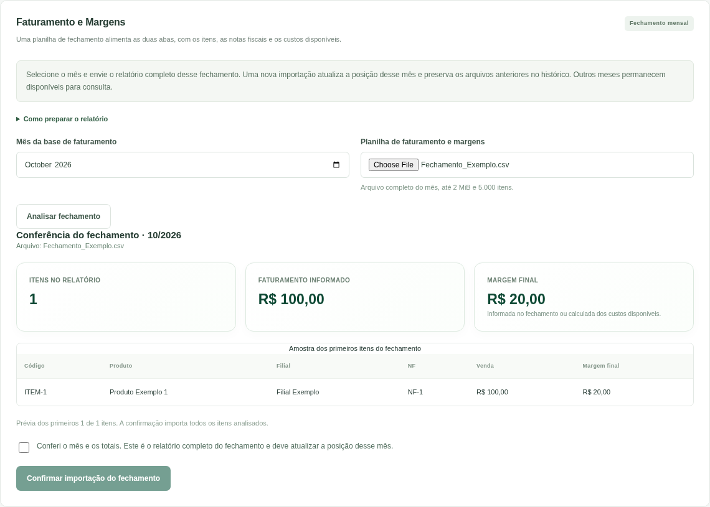
ÁREA 22 · 20 MIN
Menu lateral → Importar Bases → RH / DP
Atualizar corretamente os dados das pessoas, remunerações e benefícios, preservando a distinção entre salários e pró-labores.
Quem utiliza: RH/DP e operadores autorizados para importar e alterar a base de RH
Menu lateral → Importar Bases → RH / DP
Selecione RH / DP. A seção Importar base de RH / DP recebe uma posição completa de pessoas e valores. Não use um arquivo contendo somente os novos colaboradores como se fosse a posição integral.
Veja a figura 52.
Menu lateral → Importar Bases → RH / DP → Orientações do cabeçalho
Confira FILIAL, ADMISSAO, ANIVERSARIO, Salário Folha (ou Salário Base), VT TOTAL, Salário recebido, Adiantamento, Ajuda de Custo, Total, SETOR e Funcionário. Salário Folha/Base é remuneração sem descontos; Salário recebido é a remuneração após descontos. O formato antigo com dois cabeçalhos SALÁRIO também é aceito, mas os dois significados continuam separados.
Menu lateral → Importar Bases → RH / DP → Preparação do arquivo
Identifique os sócios pelo setor SÓCIO. Quando a coluna estiver presente, VT TOTAL, Adiantamento e Ajuda de Custo em branco ou com traço significam zero. A coluna TOTAL deve conter o total oficial do relatório; a Central não o reconstrói somando os demais campos. A linha final de totais será separada das pessoas e não deve conter um nome de funcionário.
Menu lateral → Importar Bases → RH / DP → Preparação do arquivo
São aceitos .xlsx, .xlsm e .csv UTF-8. Se existirem fórmulas de RH, abra e salve o arquivo no Excel para manter o resultado numérico salvo, ou envie uma cópia somente com valores. A Central importa o resultado e não executa fórmulas nem macros. Para .xls antigo, converta uma cópia para .xlsx.
Menu lateral → Importar Bases → RH / DP → Arquivo da base de RH / DP / Data da posição de RH → Analisar base de RH / DP
Escolha o arquivo e preencha Data da posição de RH. Use a data que a base representa. Clique em Analisar base de RH / DP e aguarde. A posição com data de referência mais recente alimenta a consulta; importar uma posição antiga não a transforma automaticamente na atual.
Importar Bases → RH / DP
Menu lateral → Importar Bases → RH / DP → Conferência da posição de RH / DP
Compare folha total, salários dos colaboradores, salário recebido dos colaboradores, pró-labore sem descontos, pró-labore recebido e benefícios com a origem. Confira Total informado na coluna TOTAL e os subtotais de colaboradores e sócios. Se a planilha tiver uma linha final de totais, a prévia identifica sua linha de origem.
Veja a figura 53.
Menu lateral → Importar Bases → RH / DP → Conferência da posição de RH / DP → Amostra
Se houver campo sem informação, confira a amostra e a lista de qualidade. Coluna ausente pode aparecer como Não informado e precisa ser avaliada; não equivale ao benefício explicitamente zerado. Corrija o arquivo se um salário, total, setor ou data estiver errado antes de confirmar.
Menu lateral → Importar Bases → RH / DP → Confirmo que esta é a base completa de RH / DP da data informada → Confirmar importação de RH / DP
Marque a declaração após conferir os campos e clique em Confirmar importação de RH / DP. Aguarde a conclusão. Abra RH / DP, clique em Atualizar RH / DP e confira os cards, uma pessoa colaboradora e uma pessoa sócia.
Menu lateral → Importar Bases → RH / DP → Analisar base de RH / DP
Se a confirmação não chegar, mantenha o mesmo arquivo e a mesma data e analise novamente para conferir o envio. Não troque a posição por outra base enquanto o resultado do envio anterior estiver pendente.
Importar Bases → RH / DP → Analisar base
ÁREA 23 · 20 MIN
Menu lateral → Importar Bases → Custos
Cadastrar o custo correto de cada produto, resolver repetições divergentes e selecionar a base que será usada na análise do fechamento.
Quem utiliza: Operadores autorizados para importar Custos e consultar Margens
Menu lateral → Importar Bases → Custos
Selecione Custos. O cadastro identifica o produto pelo código exato, inclusive zeros iniciais. Nome e peso são informações do cadastro; não são usados para adivinhar um código ou substituir a quantidade do fechamento.
Veja a figura 54.
Menu lateral → Importar Bases → Custos → Orientações de cabeçalhos
Confira os cabeçalhos Produto: código, Produto: nome, peso e custo atual. Salve a cópia somente com valores, sem fórmulas. O custo unitário conserva até seis casas decimais. Não arredonde cada custo unitário para duas casas antes de enviar, pois o arredondamento financeiro ocorre no CMV de cada linha do fechamento.
Importar Bases → Custos
Menu lateral → Importar Bases → Custos → Data de referência dos custos / Planilha de custos por item → Analisar custos
Informe a data que os custos representam, selecione o arquivo e clique em Analisar custos. Confira Produtos distintos, Ocorrências repetidas, Custos zerados, Custos não informados e a amostra. Importar o catálogo não aplica automaticamente os custos aos meses já fechados.
Veja a figura 55.
Menu lateral → Importar Bases → Custos → Códigos com custos divergentes → Custo para o código [código]
Para cada código divergente, compare as opções e escolha a linha que contém o custo oficial. A tela identifica a linha, o custo unitário e o peso. O sistema não decide que a primeira ou a última ocorrência é a correta.
Menu lateral → Importar Bases → Custos → Validar escolhas dos custos
Depois de alterar uma escolha, clique em Validar escolhas dos custos. A indicação Escolhas alteradas impede a confirmação até uma nova análise. Confira também os custos explicitamente zerados e os não informados; são situações diferentes.
Menu lateral → Importar Bases → Custos → Conferi os custos, os valores zerados e as escolhas dos códigos repetidos → Confirmar importação dos custos
Marque a declaração e clique em Confirmar importação dos custos. Aguarde a conclusão. Repetições idênticas são consolidadas no catálogo por código, enquanto as linhas originais permanecem preservadas na fonte.
Importar Bases → Custos → Analisar custos
Menu lateral → Importar Bases → Custos → Custos cadastrados e histórico → Versão da base de custos
Selecione Base mais recente por referência ou uma versão preservada. Pesquise em Buscar código ou produto e clique em Consultar custos. Confira código, produto, peso informado e custo unitário; use Custos anteriores e Próximos custos para percorrer as páginas. Importar uma base antiga não a torna a mais recente por referência. A mesma consulta está disponível em Fechamento → Custos, inclusive para acessos de consulta como a Diretoria.
Veja a figura 56.
Menu lateral → Importar Bases → Custos → Atualizar custos cadastrados
Clique em Atualizar custos cadastrados para renovar a consulta. Antes de aplicar a um mês, confira qual versão está selecionada e sua data de referência. A soma dos custos unitários de produtos diferentes não representa o custo total do fechamento.
Menu lateral → Importar Bases → Custos → Repetir confirmação pendente dos custos
Se o envio ficar pendente, mantenha a tela aberta e clique em Repetir confirmação pendente dos custos. O sistema preserva arquivo e escolhas para conferir o mesmo envio. Se a tela for perdida, consulte o histórico antes de iniciar outra importação.
Importar Bases → Custos → Custos cadastrados e histórico
ÁREA 24 · 20 MIN
Menu lateral → Importar Bases → Custos → Aplicar custos ao fechamento
Avaliar o impacto e criar uma nova versão do fechamento com o CMV atualizado e as margens recalculadas.
Quem utiliza: Operadores com permissão de Custos e de importação de fechamento
Menu lateral → Importar Bases → Custos → Custos cadastrados e histórico → Versão da base de custos
Selecione a versão que deve ser aplicada. Em Aplicar custos ao fechamento, confira Base selecionada, arquivo e data de referência. Se a seção de aplicação não aparecer, verifique o acesso de fechamento com a Gerência. Este fluxo também pode ser aberto em Fechamento → Custos quando o seu acesso permite aplicar custos; consultar o catálogo não concede essa autorização.
Veja a figura 57.
Menu lateral → Importar Bases → Custos → Aplicar custos ao fechamento → Mês do fechamento para aplicar custos
Informe o mês exato. Se não existir fechamento para esse mês, importe-o primeiro em Importar Bases → Fechamento / Faturamento. O catálogo pode ser aplicado a um mês escolhido; não altera todos os meses de uma vez.
Importar Bases → Custos → Recalcular fechamento
Menu lateral → Importar Bases → Custos → Aplicar custos ao fechamento → Analisar impacto dos custos
Clique em Analisar impacto dos custos. Compare CMV atual do fechamento, Novo CMV com a base de custos, Margem atual do fechamento e Margem recalculada. Confira quantos códigos foram encontrados e quais itens compõem a diferença.
Veja a figura 58.
Menu lateral → Importar Bases → Custos → Aplicar custos ao fechamento → Orientação do cálculo
Novo CMV da linha = custo unitário escolhido × quantidade da linha. Nova margem = venda − novo CMV − frete − imposto − comissão informados no fechamento. O custo unitário conserva sua precisão; o CMV de cada linha é arredondado para centavos. Quantidades negativas de devoluções conservam o sinal.
Menu lateral → Importar Bases → Custos → Aplicar custos ao fechamento → Conferência do CMV e da margem por item
Confira linha/código, produto/NF, quantidade, custo unitário, CMV atual, Novo CMV, Nova margem e Conferência. Código sem correspondência, quantidade ausente ou inválida, custo ausente ou zerado e frete/imposto/comissão desconhecidos bloqueiam a aplicação. Corrija a base adequada e faça nova análise. Não se presume quantidade igual a um nem custo zero para liberar o mês.
Menu lateral → Importar Bases → Custos → Aplicar custos ao fechamento → Itens anteriores do cálculo / Próximos itens do cálculo
A tabela é paginada quando há mais de vinte linhas. Percorra os itens para conferir as ocorrências. Os indicadores de impacto consideram o fechamento inteiro analisado, não somente a página visível.
Menu lateral → Importar Bases → Custos → Aplicar custos ao fechamento → Conferi o impacto → Aplicar custos e recalcular margens
Depois da conferência, marque a declaração de que quer substituir o CMV e recalcular as margens do mês em uma nova versão. Clique em Aplicar custos e recalcular margens e aguarde. O fechamento anterior, a fonte e o catálogo ficam preservados. Uma indicação de que a base já foi aplicada mantém a versão existente, sem criar outra igual.
Menu lateral → Fechamento → Margens → Mês do fechamento → Atualizar margens
Selecione o mesmo mês e atualize Margens. Abra um item de exemplo e compare novo CMV e margem com a prévia conferida. Faturamento continua disponível no mês; o recálculo mantém venda, quantidade, frete, imposto e comissão informados na origem. A nova fonte é identificada como recálculo, não como outra planilha exportada do sistema de origem.
Menu lateral → Comissões → Comissões — Vendedores → Consultar comissões
Consulte novamente o período se o fechamento atualizado participa da apuração. As políticas de comissão não são alteradas por aplicar custos. Apurações já salvas continuam com a base anterior preservada; uma nova apuração exige o fluxo de conferência próprio da área.
Menu lateral → Importar Bases → Custos → Aplicar custos ao fechamento → Repetir aplicação pendente
Se a aplicação ficar pendente, mantenha a tela aberta e use Repetir aplicação pendente. Não troque o mês ou a base para contornar o aviso. Se a versão do fechamento mudar antes da confirmação, a Central pedirá nova análise. Se perder a tela pendente, confira a posição e o histórico antes de tentar outra operação.
Importar Bases → Custos → Analisar impacto dos custos
ÁREA 25 · 18 MIN
Menu lateral → Administração → Usuários
Vincular contas existentes, conferir perfis, editar acessos e bloquear uma conta sem apagar seu histórico.
Quem utiliza: Gerência Geral: alteração,Diretoria: consulta
Menu lateral → Administração → Usuários
Abra Administração e clique em Usuários. A seção Usuários e permissões mostra Usuário, Nome, Perfil, Status e Atualizado em. Use Atualizar para consultar os dados atuais e Anterior / Próxima para mudar de página. A Diretoria visualiza a lista sem botões de alteração.
Veja a figura 59.
Administração → Usuários → Orientação abaixo de Usuários e permissões
A Central não recebe senhas nesta tela. A criação da conta e a redefinição administrativa de senha acontecem no painel de autenticação, por quem tem autorização. Solicite ao responsável a conta já criada e o User UID completo; não reutilize o identificador de outra pessoa.
Responsável técnico → Supabase → Authentication → Users → Add user → Create user
Esta etapa é externa à rotina do usuário final e deve ser feita pelo responsável autorizado. Ele cria a conta com um e-mail válido da pessoa, define o acesso no painel seguro e fornece somente o User UID para o vínculo. Uma conta Auth existente deve ser reaproveitada: não crie outra conta para contornar um cadastro ainda sem perfil.
Administração → Usuários
Administração → Usuários → Vincular conta existente
Clique em Vincular conta existente. O formulário se chama Vincular conta de autenticação e solicita User UID da conta existente, Usuário, Nome, Perfil e Status. O botão não cria uma conta de autenticação nem define sua senha.
Veja a figura 60.
Administração → Usuários → Vincular conta de autenticação
Informe o UID da pessoa correta e um usuário de 3 a 64 caracteres, usando letras, números, ponto, hífen ou sublinhado. Preencha Nome, escolha o Perfil apropriado e defina Status Ativo ou Bloqueado. Se ainda faltar uma configuração individual, mantenha o cadastro Bloqueado até a conclusão dessa configuração.
Administração → Usuários → Revisar e salvar → Confirmação do cadastro
Clique em Revisar e salvar, confira login, nome, perfil e status na confirmação e conclua. Aguarde Cadastro salvo. Depois peça que a pessoa saia da Central e entre com seu próprio usuário para conferir quais menus aparecem. O salvamento registra a alteração na auditoria.
Administração → Usuários → Linha da pessoa → Editar → Revisar e salvar
Localize a pessoa correta e clique em Editar. Altere apenas os campos necessários, revise e confirme. Para uma cobradora, retire o vínculo de carteira antes de trocar seu perfil quando a regra do cadastro exigir. O sistema mantém ao menos uma Gerência Geral ativa; uma mudança que deixe a Central sem essa gestão será recusada.
Administração → Usuários → Editar → Status: Bloqueado → Revisar e salvar
Para suspender o acesso, selecione Bloqueado e salve. A tela não oferece exclusão do usuário como rotina de operação. O bloqueio do login não apaga os títulos, os atendimentos ou os registros de auditoria associados à pessoa.
Gerência Geral → Responsável técnico → Configuração individual do acesso
O campo Perfil aplica a função cadastrada; não é um editor livre de todas as permissões. A limitação individual de Contas a Pagar e a liberação das nove áreas de importação para uma pessoa de Contas a Receber são configuradas pelo responsável técnico, fora deste formulário. Depois da configuração, valide os menus com a conta beneficiada. Não promova a pessoa a Gerência Geral apenas para liberar uma importação.
Conta limitada de Contas a Pagar / Conta de Contas a Receber com importações ampliadas
No acesso CP limitado, confirme somente Painel Gerencial, Contas a Pagar e Importar Bases; dentro desta última, apenas Contas a Pagar. Na concessão de importações ampliadas para CR, confira as nove áreas de Importar Bases. Essa pessoa continua no perfil Contas a Receber e não recebe Administração ou configuração de regras de comissão por essa concessão.
Administração → Usuários → Vincular conta existente
ÁREA 26 · 15 MIN
Menu lateral → Administração → Cobradoras
Cadastrar a pessoa responsável, vinculá-la ao login correto e entender a diferença entre vínculo de acesso e atribuição dos títulos.
Quem utiliza: Gerência Geral: cadastro e vínculo,Diretoria: consulta
Menu lateral → Administração → Cobradoras
A seção Cobradoras e carteiras mostra Pessoa responsável, Status e Login vinculado. Clique em Atualizar antes de alterar um vínculo. A coluna Sem vínculo indica que a pessoa ainda não está associada a um login.
Veja a figura 61.
Administração → Cobradoras → Cadastrar pessoa responsável
No formulário Cadastrar pessoa responsável, preencha Nome da cobradora e Status Ativa. Clique em Revisar e salvar cobradora, confira a confirmação e conclua. Isso cria o cadastro da responsável, sem atribuir automaticamente todos os títulos a ela.
Administração → Usuários → Perfil da cobradora
Confirme que o login correto já existe com perfil Cobradora 1 ou Cobradora 2 e que o acesso está ativo. Esses perfis representam acesso operacional individual; o nome do login, sozinho, não define quem é a responsável da carteira.
Administração → Cobradoras

Administração → Cobradoras → Vincular login à pessoa responsável
Selecione Login e Pessoa responsável. O sistema mostra responsáveis inativas ou já vinculadas como indisponíveis para uma nova associação. Confira a pessoa e clique em Revisar e salvar vínculo. Uma responsável não pode ser vinculada simultaneamente a dois logins por esta tela.
Veja a figura 62.
Administração → Cobradoras → Revisar e salvar vínculo → Confirmação
A confirmação informa qual login terá acesso à carteira da pessoa selecionada. Salvar o vínculo não redistribui os títulos existentes. A atribuição da responsável ao cliente/título é conferida na importação de Contas a Receber; o vínculo aqui apenas determina quem acessa aquela carteira.
Sair → Login da cobradora → Cobrança
Peça que a cobradora entre no próprio acesso e abra Cobrança. Sem vínculo, ela ficará sem carteira disponível para atendimento. Se a carteira estiver vazia, confira separadamente o vínculo de login, a responsável atribuída aos clientes na importação e a existência de títulos efetivamente vencidos.
Administração → Cobradoras → Linha da pessoa → Editar → Status → Revisar e salvar cobradora
Use Editar para corrigir o nome ou alterar Ativa / Inativa. Uma responsável inativa não acessa sua carteira vinculada. Essa alteração não apaga os atendimentos nem deve ser interpretada como transferência dos títulos a outra pessoa.
Administração → Cobradoras → Vincular login à pessoa responsável → Login → Pessoa responsável: Sem vínculo
Para desvincular, selecione o login e escolha Sem vínculo. Clique em Revisar e salvar vínculo e confira que esse login ficará sem carteira. Faça a nova associação planejada separadamente e valide o acesso; não use a desvinculação como forma de baixar ou transferir títulos.
Administração → Cobradoras → Vincular login à pessoa responsável
ÁREA 27 · 8 MIN
Menu lateral → Administração → Auditoria
Localizar o registro de uma operação e reunir informações para esclarecer alterações e falhas.
Quem utiliza: Gerência Geral,Diretoria: consulta
Menu lateral → Administração → Auditoria
Clique em Auditoria para abrir Auditoria central. A lista apresenta Data/hora, Usuário, Perfil, Módulo, Entidade, Ação e Registro. Os horários são exibidos em Brasília.
Veja a figura 63.
Administração → Auditoria → Atualizar → Anterior / Próxima
Use Atualizar para buscar os eventos atuais. A tela mostra 25 eventos por página, dos mais recentes para os anteriores. Use Anterior e Próxima para percorrer os registros. A interface atual não possui um filtro geral de auditoria por texto ou um botão de exportação nesta tela.
Administração → Auditoria → Linha do evento
Compare horário, usuário, módulo e ação com a operação procurada. Uma importação, validação ou alteração de vínculo pode gerar registros diferentes relacionados ao mesmo processo. O campo Registro identifica o registro correspondente; ele não é um comprovante bancário.
Administração → Auditoria → Evento relacionado → Registro
Anote o horário de Brasília, o usuário, o módulo, a ação e o identificador do evento/registro exibido. Combine essas referências com a mensagem de erro e o nome do arquivo utilizado. Não solicite nem encaminhe senhas ou chaves administrativas.
Administração → Auditoria → Histórico imutável
A auditoria serve para consultar o que foi registrado. Não oferece edição ou exclusão de eventos. Para corrigir uma informação financeira, use o fluxo próprio da área com a autorização correspondente; não tente apagar a evidência da operação anterior.
Administração → Auditoria
ÁREA 28 · 15 MIN
Tela com a mensagem → Conferência do problema → Gerência ou suporte, se necessário
Interpretar as mensagens mais comuns e retomar a rotina sem perder o histórico nem repetir um pagamento por engano.
Quem utiliza: Todas as pessoas usuárias,Gerência Geral: triagem
Tela de login → Mensagem de erro → Esqueci minha senha, se necessário
Confira se digitou seu usuário da Central e não outro identificador. Para senha esquecida, use Esqueci minha senha. Para um cadastro recém-criado, a Gerência deve conferir o perfil ativo na Central. Se houver excesso de tentativas, aguarde o prazo indicado antes de tentar novamente.
Veja a figura 01.
Cabeçalho → Nome e Perfil → Menu lateral → Gerência Geral
Confira primeiro o nome e o perfil conectados. Se uma permissão acabou de ser alterada, saia e entre novamente. Se a área continuar ausente, peça à Gerência a conferência da autorização daquela pessoa. Não entre com o login da Gerência como solução de rotina.
Cobrança → Títulos → Abrir → Atendimento do título → Orientação abaixo dos botões
Leia a orientação do atendimento: pode faltar vínculo de responsável, haver outro cronômetro em andamento, um retorno prioritário, validação financeira pendente ou um título disponível somente no histórico. A pessoa responsável dos títulos é conferida na importação de CR; o cadastro de login é conferido na Administração. Use o treinamento de Cobrança para cumprir a condição indicada, em vez de clicar repetidamente.
Importar Bases → Área escolhida → Problemas encontrados
Leia Linha, Coluna, Problema e Como corrigir. Corrija a célula indicada na cópia do arquivo, selecione a cópia corrigida e analise novamente. Se a coluna Documento / NF contém um valor monetário ou há linhas deslocadas, confira a estrutura na origem. Não invente um documento e não altere o valor do título apenas para passar na validação.
Importar Bases → Contas a Receber → Conferir parcelas do mesmo documento
Compare cliente, nota, filial, vencimento e valor. Escolha a parcela existente somente se for uma atualização daquela mesma parcela; selecione Nova parcela quando for realmente outra parcela. Clique em Validar escolhas de parcelas ou Analisar arquivo para reaplicar as escolhas. Persistindo a dúvida, consulte a responsável da base antes de confirmar.
Importar Bases → Mensagem de alteração da base → Analisar o mesmo arquivo novamente
Uma importação, recebimento, atendimento ou vínculo pode ter sido alterado por outra pessoa depois da análise. Gere uma nova análise e confira os dados atuais antes de concluir. Não substitua as escolhas silenciosamente para usar uma prévia antiga.
Importar Bases → Contas a Pagar → Mensagem A confirmação está pendente → Repetir confirmação pendente
Mantenha o mesmo arquivo e as escolhas congelados. Clique em Repetir confirmação pendente para conferir o mesmo envio. Não selecione outro arquivo para tentar forçar a conclusão nem registre manualmente os mesmos pagamentos enquanto esse resultado está incerto.
Importar Bases → Contas a Receber → A confirmação está pendente
Em Abertos e vencidos, mantenha a tela aberta e clique em Conferir confirmação pendente: a Central usa o mesmo protocolo e as mesmas escolhas. Em Títulos quitados, a tela orienta Analisar arquivo novamente para conferir o mesmo envio. Siga a orientação exibida para o tipo de relatório; ausência de resposta não comprova que nada foi gravado.
Área afetada → Mensagem de ativação → Gerência Geral / Responsável técnico
Informe a área, a versão do rodapé, a mensagem exata e o código para suporte, quando exibido. A instalação do banco e a publicação de funções são tarefas do responsável técnico. Conceder acesso a uma aba não instala o módulo. Publicar o site, por si só, não confirma que as atualizações do Supabase foram aplicadas.
Área consultada → Filtros → Data da base → Detalhamento dos títulos ou itens
Compare o mesmo período, filial, responsável, centro de custo e situação. Separe valores previstos de pagos/recebidos efetivos e confira a data real de pagamento ou recebimento. Para uma diferença persistente, reúna o relatório original, os filtros utilizados e o total esperado; peça a conferência dos títulos individuais. Não ajuste uma célula apenas para fazer o total fechar.
Indicador ou detalhe → Legenda do campo → Importar Bases ou responsável pela base
Não informado, Pendente e erro de consulta significam que o sistema não tem um dado confirmado para aquele campo. Zero pode ser um resultado válido de uma base já conhecida. Antes de concluir que não há valor, confira a data de atualização, a existência da base e a mensagem da tela.
Mensagem da tela → Nome da área / Versão / Data e horário de Brasília / Arquivo / Filtros / Código de suporte
Envie ao responsável: o que estava tentando fazer, a área, o tipo de relatório, a data e o horário, o nome do arquivo, os filtros, a mensagem exata e o código de suporte. Uma imagem da mensagem pode ajudar; evite expor dados pessoais ou de clientes sem necessidade. Nunca encaminhe senha, chave administrativa ou o link completo de recuperação de acesso.
ENCERRAMENTO
Registre com a Gerência a data do treinamento, as áreas praticadas e as dúvidas que permaneceram. A liberação de uma conta deve acompanhar a função da pessoa na operação.